CHAPTER 02 데이터 분석 계획
원본: 02_빅분기필기-데이터분석계획.pdf (책 1-81 ~ 1-146)
전사 완료 — 책 1-81 ~ 1-146 전체 (SECTION 01 · 02 본문, 개념 체크, 예상문제 및 정답 & 해설 포함). 좌측 퀵메뉴는 본문 제목을 따라 자동 생성됩니다. 좌측 퀵메뉴는 본문 제목을 따라 자동 생성됩니다.
CHAPTER 02 데이터 분석 계획
빅데이터 분석을 위한 방안을 수립하고 세부적인 작업을 계획합니다. 분석 과제 도출 방법으로 상향식 접근 방식과 하향식 접근 방식의 차이점을 확인하며 공부합니다. 빅데이터 분석 방법론의 각 단계와 작업들을 설명할 수 있어야 합니다. 데이터 확보 방안 및 분석 프로젝트 관리를 위한 요소들을 학습합니다.
SECTION 01 분석 방안 수립
빈출 태그 분석 기획 · 로드맵 · 하향식 · 상향식 · 프로토타이핑 · SDLC · KDD · CRISP–DM · SEMMA
01 데이터 분석(Data Analysis)★
데이터 분석은 대용량의 데이터 집합으로부터 유용한 정보를 찾고 결과를 예측하기 위해 목적에 따라 분석기술과 방법론을 기반으로 정형 · 비정형 대용량 데이터를 구축, 탐색, 분석하고 시각화를 수행하는 업무이다. (국가직무능력표준, NCS)
1) 데이터 분석의 현황
- 대다수의 기업들은 빅데이터가 갖고 있는 무한한 비즈니스 잠재력을 규명하는 초기 프로젝트에 머무르고 있다.
- 빅데이터를 활용하기 위한 장애물은 비용보다 데이터 분석을 수행하기 위한 분석적 방법과 성과에 대한 이해의 부족이다.
2) 데이터 분석의 지향점
① 전략적 통찰이 없는 데이터 분석 배제
- 단순하게 데이터 분석을 자주, 많이 수행하는 것이 경쟁우위를 가져다주는 것은 아니다.
- 분석은 경쟁의 본질에 영향을 미치고 기업의 경쟁전략을 이끌어 가므로, 경쟁의 본질을 제대로 바라보지 못한 분석은 불필요한 결과를 만들어 낸다.
② 일차원적인 데이터 분석 지양
- 대부분의 기업들은 업계 내부의 문제에만 중점을 두고 있으며, 주로 부서 단위로 관리되기에 전체 비즈니스 관점의 핵심적인 역할을 기대하기 어렵다.
| 산업군 | 데이터 분석 내용 |
|---|---|
| 금융 | 신용점수 산정, 사기방지, 프로그램 트레이딩, 고객 수익성 분석 |
| 소매 | 프로모션, 판매관리, 수요예측, 재고관리 |
| 제조 | 공급사슬 최적화, 수요예측, 재고관리, 상품개발 |
| 운송 | 일정관리, 노선배정, 수익관리 |
| 병원 | 약품거래, 질병관리 |
| 에너지 | 트레이딩, 공급, 수요예측 |
| 정부 | 사기방지, 범죄방지 |
| 온라인 | 고객추천, 사이트 설계 |
| 기타 | 성과관리 |
③ 전략 도출을 위한 가치 기반 데이터 분석 지향
- 전략적 통찰력 창출에 중점을 두고, 데이터 분석의 활용 범위를 더 넓고 전략적으로 변화시켜야 한다.
- 사업 성과를 견인하는 요소들과 차별화를 꾀할 기회에 대해 전략적 인사이트를 주는 가치 기반 분석 단계로 나아가야 한다.
- 사업과 관련 트렌드에 대한 청사진을 그리고, 인구통계학적 변화나 사회경제적 트렌드 및 고객 니즈의 변화 등을 고려하여 분석을 수행한다.
- 가치 기반 데이터 분석을 통해 해당 사업의 중요한 기회를 발굴하고, 경영진의 지원을 얻어낼 수 있으며 이를 통해 강력한 모멘텀을 형성할 수 있다.
3) 데이터 분석에 대한 회의론
- 솔루션을 도입한 후 어떻게 활용하여 가치를 창출할 수 있을지 다시 또 과제를 수행해야 하는 상황이 반복되며 고가의 솔루션을 방치하고 있다.
- 현재 소개되고 있는 빅데이터 분석 성공사례들의 대다수가 기존 데이터 분석 프로젝트를 재포장한 경우이다.
4) 데이터 분석 시 고려사항
- 데이터 분석은 규모가 아니라 어떤 시각과 통찰을 얻을 수 있는가의 문제이다.
- 비즈니스 핵심에 대해 객관적이고 종합적인 통찰을 가져다 줄 수 있는 데이터를 찾아야 한다.
- 전략과 비즈니스의 핵심 가치에 집중하고 관련된 분석 평가지표를 개발하여 시장과 고객 변화에 효과적으로 대응하는 것이 중요하다.
- 데이터 분석은 분석 방법론을 이용하여 여러 형태의 데이터를 목적에 맞게 분석만 하는 것이다.
- 일차원적인 데이터 분석이 기본이며, 탐색적 데이터 분석(EDA)를 통해 목표를 달성할 수 있다.
- 데이터를 활용하기 위한 장애물은 높은 금전적, 시간적 비용들이다.
- 데이터 분석은 규모가 아니라 어떤 시각과 통찰을 얻을 수 있는가의 문제이다.
- 데이터 분석은 분석기술과 방법론을 기반으로 여러 형태의 데이터를 구축, 탐색, 분석 및 시각화까지 수행하는 것이다.
- 일차원적인 데이터 분석은 지양하여야 하며, EDA 또한 전략적 통찰을 기반으로 진행되어야 한다.
- 빅데이터를 활용하기 위한 장애물은 비용보다 데이터 분석을 수행하기 위한 분석적 방법과 성과에 대한 이해의 부족이다.
02 데이터 분석 기획
분석 기획은 실제 분석을 수행하기에 앞서 분석을 수행할 과제의 정의 및 의도했던 결과를 도출할 수 있도록 이를 적절하게 관리할 수 있는 방안을 사전에 계획하는 작업이다.
- 어떠한 목표(What)를 달성하기 위해(Why) 어떠한 데이터를 가지고 어떤 방식으로(How) 수행할 것인가에 대한 일련의 계획을 수립한다.
1) 분석 기획의 특징
① 분석 대상과 방법에 따른 분류
- 분석 주제와 방법에 대한 특성상 4가지 유형을 넘나들며 분석을 하고 결과를 도출하는 과정을 반복한다.
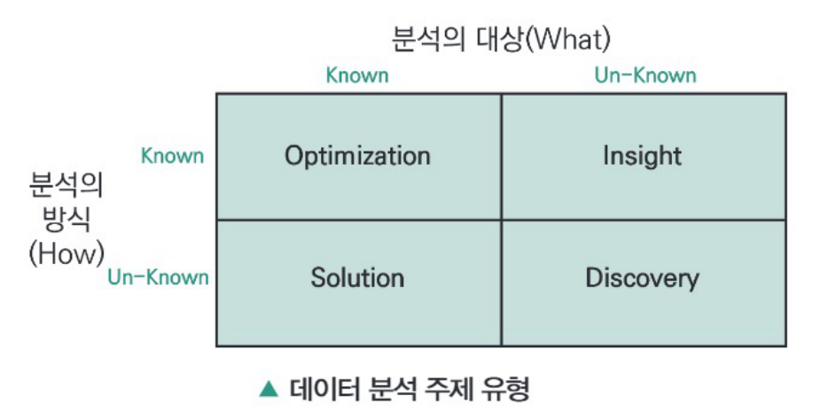
② 목표 시점에 따른 분류
| 단기적 접근 방식 (과제 중심적 접근) |
|
| 중장기적 접근 방식 (마스터 플랜 접근) |
|
| 혼합 방식 (분석 기획 시 적합) |
|
2) 분석 기획 시 필요역량
① 분석 기획을 위한 기본적인 소양
- 분석 기획은 도메인 지식과 정보기술, 수학 및 통계학적 지식이라는 3가지 역량에 대한 균형 잡힌 시각을 갖고서 분석의 방향성과 계획을 수립하는 것이다.
② 프로젝트 관리 역량과 리더십
- 분석 기획 시 기본적인 3가지 소양과 함께 프로젝트 관리 역량과 분석 프로젝트를 잘 이끌어 갈 리더십이 중요하다.
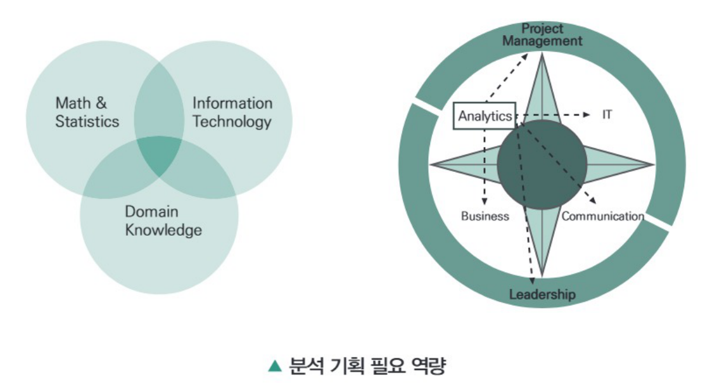
3) 분석 기획 시 고려사항
① 사용 가능한 데이터 확인
- 데이터 확보 가능 여부, 데이터의 유형 등을 미리 확인하여야 한다.
- 데이터의 유형에 따라 적용 가능한 솔루션이나 분석 방법론이 달라진다.
② 적합한 사례 탐색
- 기존에 잘 구현되어 활용되고 있는 유사 분석 시나리오나 솔루션이 있다면 이를 최대한 활용하는 것이 유리하다.
- 분석 결과를 활용할 사용자의 측면에서 공감대를 얻을 수 있으며, 분석 수행이 원활하게 될 수 있도록 도와준다.
③ 분석 수행 시 발생 가능한 요소 고려
- 분석 결과의 정확도를 높이기 위하여 기간과 투입 자원 증가가 불가피하며, 이로 인한 비용 상승을 충분히 고려해야 한다.
- 사용자가 쉽게 이해하고 활용할 수 있도록 시각화 등을 고려하여야 한다.
- 분석 결과를 실제 환경에서도 성능에 문제없이 적용할 수 있도록 충분히 고려하여야 한다.
- 일회성 분석으로 그치지 않고 조직의 역량으로 내재화될 수 있도록 계속적인 교육과 활용방안 등의 변화 관리방안을 수립하여야 한다.
| 설명 분석 (Descriptive Analysis) | 가장 기본이 되는 분석으로 주어진 데이터를 요약 또는 집계하여 결과를 도출한다. 과거 또는 현재 발생한 사실 그 자체를 설명한다. |
| 예측 분석 (Predictive Analysis) | 미래의 불확실한 사실을 사전에 예측하거나 알려지지 않은 결과의 가능성을 파악하기 위하여 사용하는 분석 방법이다. |
| 진단 분석 (Diagnostic Analysis) | 데이터 간의 인과 관계 또는 상관 관계를 파악하여 특정 결과가 발생한 원인을 밝히기 위해 분석을 수행한다. |
| 처방 분석 (Prescriptive Analysis) | 예측되는 상황을 위해 무엇을 하면 좋을 지 대안을 제시한다. 대안 도출과 의사 결정은 물론 일부 실행까지 진행하는 분석방법이다. |
- 데이터 분석을 위한 방법은 준비되어 있으나, 무엇을 분석해야 할지 모르는 상황에서 접근하는 영역을 Insight라 한다.
- 시대의 흐름을 빠르게 따라가기 위해 과제 중심적 접근 방식을 지향하여야 하며, 전통적 접근방식인 마스터 플랜 접근 방식은 지양하여야 한다.
- 어떠한 목표(What)를 달성하기 위해(Why) 어떠한 데이터를 가지고 어떤 방식으로(How) 수행할 것인가에 대한 일련의 계획을 수립한다.
- 분석 결과의 정확도를 높이기 위하여 기간과 투입 자원 증가가 불가피하며, 이로 인한 비용 상승을 충분히 고려해야 한다.
- 과제 중심적 접근 방식은 단기적 접근 방식으로, 주로 당면한 과제를 빠르게 해결하기 위해 사용되며, 지속적인 분석 문화를 내재화하기 위해서는 중장기적 접근 방식인 마스터 플랜 접근 방식을 사용하여야 한다.
03 분석 마스터 플랜과 로드맵 설정
1) 분석 마스터 플랜
분석 과제를 수행함에 있어 그 과제의 목적이나 목표에 따라 전체적인 방향성을 제시하는 기본계획이다.
① 분석 마스터 플랜 수립 절차
- 분석 마스터 플랜 시 일반적인 정보전략계획 방법론을 활용할 수 있다. 다만 데이터 분석 기획의 특성을 고려하여 수행하여야 한다.
- 과제 도출 방법을 활용하여 데이터 분석 과제들을 빠짐없이 정의한다.
- 분석 과제의 중요도와 난이도 등을 고려하여 우선순위를 결정한다.
- 단기와 중장기로 나누어 분석 로드맵을 수립한다.
② 정보전략계획(Information Strategy Planning, ISP)
- 정보기술 및 시스템을 전략적으로 활용하기 위한 중장기 마스터 플랜을 수립하는 절차이다.
- 조직 내 · 외부의 환경을 충분히 분석하여 새로운 기회나 문제점을 도출한다.
- 사용자의 요구사항을 확인하여 시스템 구축 우선순위를 결정한다.
2) 분석 과제 우선순위 평가기준
① IT 프로젝트의 과제 우선순위 평가기준
- 전략적 중요도, 실행 용이성 등 기업에서 고려하는 중요 가치 기준에 따라 다양한 관점으로 과제 우선순위 기준을 정의하여 평가한다.
| 평가관점 | 평가요소 | 내용 |
|---|---|---|
| 전략적 중요도 | 전략적 필요성 |
|
| 시급성 |
| |
| 실행 용이성 | 투자 용이성 |
|
| 기술 용이성 |
|
② 데이터 분석 프로젝트의 우선순위 평가기준
- 기존 IT 프로젝트와는 다른 기준으로 우선순위 평가 기준을 정의하여야 하며, 과제를 수행하고자 하는 기업이 처한 상황에 따라 그 기준이 달라질 수 있다.
| ROI 요소 | 특징 | 내용 | ||
|---|---|---|---|---|
| 투자비용 요소 (Investment) | 데이터 크기 (Volume) |
| 3V | 4V |
| 데이터 형태 (Variety) |
| |||
| 데이터 속도 (Velocity) |
| |||
| 비즈니스 효과 (Return) | 새로운 가치 (Value) |
|
③ 분석 ROI 요소를 고려한 과제 우선순위 평가기준
| 평가관점 | 평가요소 | 내용 | ROI 요소 |
|---|---|---|---|
| 시급성 (중요) |
|
| 비즈니스 효과 |
| 난이도 |
|
| 투자비용 요소 |
- 조직의 상황에 따라 난이도를 조율한다.
- 분석 준비도와 성숙도 진단 결과를 활용해 조직의 분석 수준을 파악한다.
- 파악된 수준을 기초로 하여 적용 범위와 수행 방법별 난이도를 조정한다.
3) 분석 과제 우선순위 선정 및 조정
① 포트폴리오 사분면 분석 기법 활용 : 난이도와 시급성을 기준으로 분석 과제 유형을 분류하여 4분면에 배치한다.
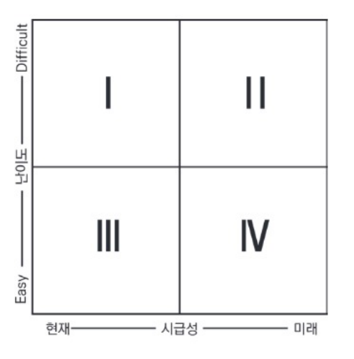
② 매트릭스 내 분석 과제 우선순위 선정
- 가장 우선적으로 분석 과제 적용이 필요한 영역은 3사분면(III 영역)이다.
- 우선순위가 낮은 영역은 2사분면(II 영역)이다.
- 적용 우선순위 기준을 시급성에 둘 경우 순서 : III → IV → I → II 영역
- 적용 우선순위 기준을 난이도에 둘 경우 순서 : III → I → IV → II 영역
③ 매트릭스 내 분석 과제 우선순위 조정
- 시급성이 높고 난이도가 높은 1사분면(I 영역)은 의사결정을 통해 적용 우선순위를 조정할 수 있다.
- 데이터 양과 특성, 분석 범위 등에 따라 난이도를 조율하여 적용 우선순위를 조정할 수 있다.
예 난이도를 조율하여 1사분면에서 3사분면으로 이동
④ 분석 과제 우선순위 조정 시 고려사항
- 기술적 요소에 따른 적용 우선순위 조정
- 대용량 데이터 분석은 데이터 저장, 처리, 분석을 위한 새로운 기술 요소들로 인하여 운영중인 시스템에 영향을 줄 수 있다.
- 기존 시스템에 미치는 영향을 최소화하여 적용하거나 운영중인 시스템과 별도로 시행하여 난이도 조율을 통한 우선순위를 조정할 수 있다.
- 분석 범위에 따른 우선순위 조정
- 분석 과제의 전체 범위를 한 번에 일괄적으로 적용하여 추진할 수 있다.
- 분석 과제 중 일부만 PoC로 진행하고 평가 후에 범위를 확대할 수 있다.
4) 분석 로드맵 설정
분석 로드맵은 마스터 플랜에서 정의한 목표를 기반으로 분석 과제를 수행하기 위해 필요한 기준 등을 담아 만든 종합적인 계획이다.
① 분석 로드맵 수립 절차
- 최종적인 실행 우선순위를 결정하여 단계적 구현 로드맵을 수립한다.
- 단계별로 추진하고자 하는 목표를 명확하게 정의한다.
- 추진 과제별 선행 관계를 고려하여 단계별 추진 내용을 정렬한다.
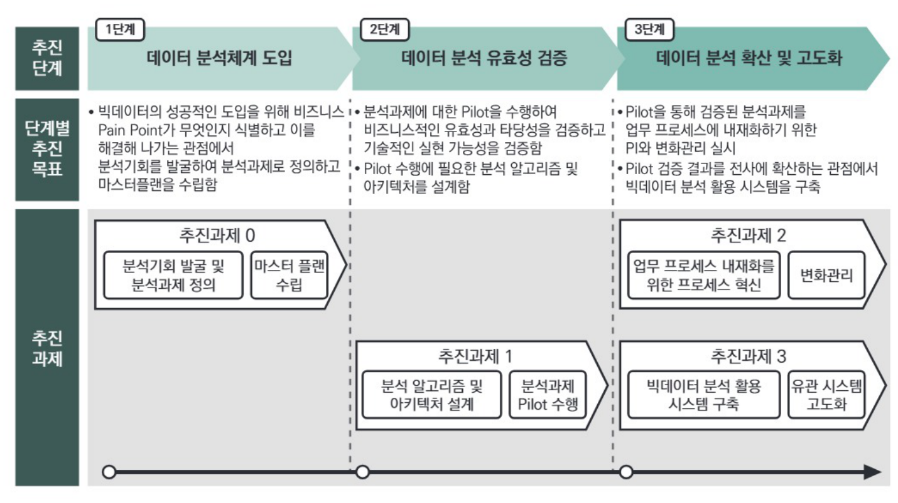
② 세부적인 일정계획 수립
- 반복적인 정련과정을 통해 프로젝트의 완성도를 높여 나간다.
- 데이터 수집 및 확보와 분석 데이터 준비 단계는 순차적으로 진행하고 모델링 단계는 반복적으로 수행한다.
- 주로 순차형과 반복형을 혼합하여 사용한다.
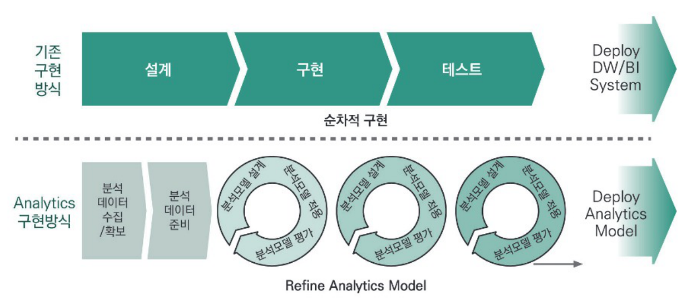
- 분석 로드맵은 마스터 플랜에서 정의한 목표를 기반으로 분석 과제를 수행하기 위해 필요한 기준 등을 담아 만든 종합적인 계획이다.
- 단계별로 추진하고자 하는 목표를 명확하게 정의하고, 추진 과제별 선행 관계를 고려하여 단계별 추진 내용을 정렬한다.
- 데이터 수집 및 확보와 분석 데이터 준비 단계는 순차적으로 진행하고 모델링 단계는 반복적으로 수행하는 순차형과 반복형을 혼합하여 사용한다.
- 분석 과제를 수행함에 있어 그 과제의 목적이나 목표에 따라 전체적인 방향성을 제시하는 기본계획이다.
- 분석 과제를 수행함에 있어 그 과제의 목적이나 목표에 따라 전체적인 방향성을 제시하는 기본계획은 분석 마스터 플랜의 정의이다.
- 매트릭스 기반 분석 과제 우선순위 선정 시, 분석이 쉽지 않지만 시급하게 진행되어야 하는 경우 1사분면에 위치시킨다.
- 데이터 양과 특성, 분석 범위 등에 따라 난이도를 조율하여 적용 우선순위를 3사분면에서 1사분면으로 이동할 수 있다.
- 대용량 데이터 분석은 데이터 저장, 처리, 분석을 위한 새로운 기술 요소들로 기존 시스템과는 무관하다.
- 분석 과제의 전체 범위를 한 번에 일괄적으로 적용하기는 어려우며, 일부만 PoC로 진행하고 평가 후에 범위를 확대할 수 있다.
- 시급성이 높고 난이도가 높은 영역은 1사분면이다.
- 난이도를 조율하여 적용 우선순위를 1사분면에서 3사분면으로 이동할 수 있다.
- 대용량 데이터 분석은 데이터 저장, 처리, 분석을 위한 새로운 기술 요소들로 인하여 운영중인 시스템에 영향을 줄 수 있다.
- 분석 과제의 전체 범위를 한 번에 일괄적으로 적용하여 추진할 수도 있고, 분석 과제 중 일부만 PoC로 진행하고 평가 후에 범위를 확대할 수 있다.
- 과제를 수행하고자 하는 기업이 처한 상황에 따라 그 기준이 달라질 수 있다.
- 투자비용 요소로서 데이터 크기, 형태, 속도가 있으며, 비즈니스 효과로 새로운 가치를 얻을 수 있다.
- 시급성을 충족시키기 위해 데이터 가공 비용과 분석 수준 등을 낮출 수 있다.
- 난이도를 조절하기 위하여 데이터 획득 비용과 분석 수준 등을 낮출 수 있다.
- 시급성의 평가요소는 전략적 중요도와 목표가치이며, 데이터 획득 비용과 가공 및 저장 비용, 분석 적용 비용, 분석 수준은 난이도의 평가요소이다.
04 분석 문제 정의
1) 분석 문제 정의 개요
① 분석 과제 도출
분석 과제는 해결해야 할 다양한 문제들을 데이터 분석 문제로 변환하여 분석 프로젝트로 수행할 수 있는 과제정의서 형태로 도출한다.
② 대표적인 분석 과제 도출 방법
문제가 먼저 주어지고 이에 대한 해법을 찾아가는 하향식 접근 방식과 데이터를 기반으로 문제의 재정의 및 해결방안을 탐색하는 상향식 접근 방식이 있다.
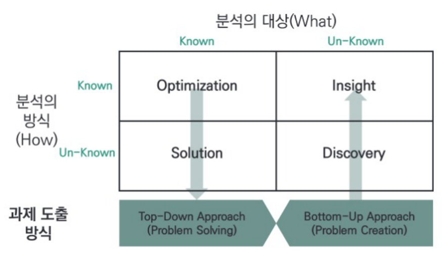
③ 최적의 의사결정을 위한 혼합방식
- 동적인 환경에서 발산과 수렴 단계를 반복적으로 수행하며 상호 보완을 통해 분석의 가치를 극대화할 수 있다.
- 상향식 접근 방식의 발산(Diverge) 단계 : 가능한 옵션을 도출
- 하향식 접근 방식의 수렴(Converge) 단계 : 도출된 옵션을 분석하고 검증
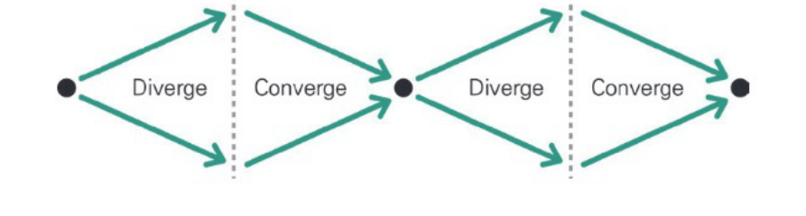
④ 분석 과제 정의
- 분석 과제 정의서는 다양한 방식으로 도출한 분석 과제들을 명확하게 정의하여 상세하게 작성한다.
- 필요한 데이터, 데이터 수집과 분석 난이도, 분석 방법과 수행 주기, 상세 분석 과정, 분석 결과에 대한 검증 책임자 등을 포함한다.
- 분석 데이터는 조직 내부뿐만 아니라 외부 데이터도 포함하며, 데이터 유형이나 종류를 가리지 않고 범위를 확장하여 고려한다.
- 분석 과제 정의서는 분석 프로젝트를 수행하는 이해관계자가 프로젝트의 방향을 설정하고 성공 여부를 판단할 수 있는 자료로 사용된다.
- 분석 과제 정의서는 향후 프로젝트 수행계획의 입력물로 사용된다.
2) 하향식 접근 방식(Top Down Approach)
하향식 접근 방식은 문제가 주어지고 이에 대한 해법을 찾기 위하여 각 과정이 체계적으로 단계화되어 수행하는 방식이다.
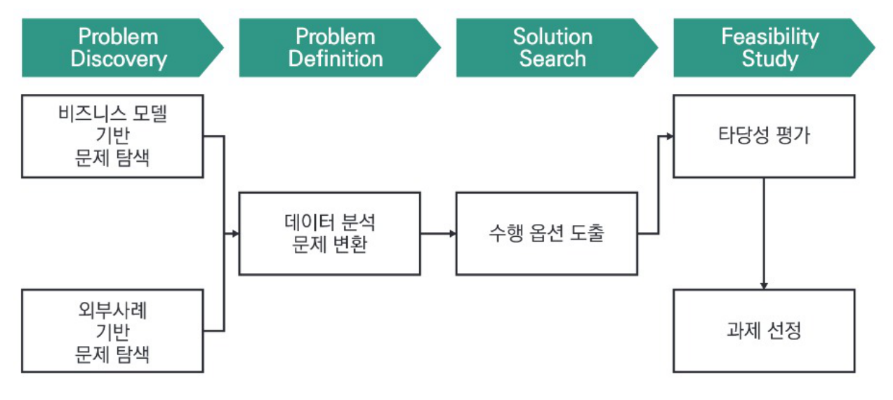
| 단계 | 내용 |
|---|---|
| 문제 탐색 | 현황 분석, 인식된 문제점, 전략에서 기회나 문제를 탐색한다. |
| 문제 정의 | 해당 현실 문제를 데이터 관점의 문제로 정의한다. |
| 해결방안 탐색 | 데이터 관점의 문제를 해결하기 위한 방안을 탐색한다. |
| 타당성 평가 | 데이터 분석의 타당성을 평가한다. |
① 문제 탐색(Problem Discovery) 단계
- 개별적으로 인지하고 있는 문제를 단순하게 나열하는 것보다 전체적인 관점의 기준 모델을 활용하여 누락 없이 문제를 도출하고 식별해야 한다.
- 현재 데이터의 소유 여부와 데이터가 없는 경우 해결방안 등에 대한 세부적인 내용보다 문제를 해결하여 발생하는 가치에 중심을 두어야 한다.
| 구분 | 내용 |
|---|---|
| 비즈니스 모델 기반 문제 탐색 |
|
| 외부 참조 모델 기반 문제 탐색 |
|
| 분석 유스케이스 정의 |
|
② 문제 정의(Problem Definition) 단계
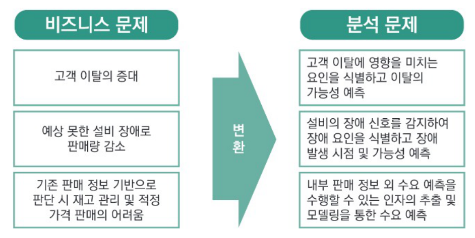
- 식별된 비즈니스 문제를 데이터적인 문제로 변환하여 정의한다.
- 필요한 데이터와 기법을 정의하기 위한 데이터 분석 문제로 변환한다.
- 분석 수행자 외 문제 해결 시 효용을 얻을 최종 사용자 관점에서 정의한다.
- 분석 문제가 잘 정의되면 필요한 데이터의 정의나 기법 발굴 시 용이하므로, 분석의 관점으로 가능한 정확하게 문제를 재정의하여야 한다.
③ 해결방안 탐색(Solution Search) 단계
- 정의된 데이터 분석 문제를 해결하기 위한 다양한 방안들을 모색한다.
- 분석 기법 및 시스템과 분석 역량 보유 여부에 따라 세분화가 가능하다.
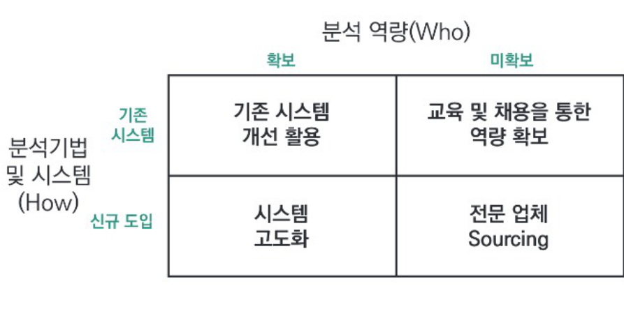
④ 타당성 평가(Feasibility Study) 단계
- 도출된 분석 문제, 가설에 대한 대안을 과제화하기 위한 타당성을 분석한다.
- 도출된 여러 대안 중 평가 과정을 거쳐 가장 우월한 대안을 선택한다.
| 경제적 타당성 |
|
| 데이터 및 기술적 타당성 |
|
3) 하향식 접근 방식의 문제 탐색 방법
① 비즈니스 모델 캔버스를 활용한 과제 발굴
- 해당 기업의 사업 모델을 도식화한 비즈니스 모델 캔버스의 9가지 블록을 단순화하여 문제 발굴을 3개의 단위로, 이를 관리하는 2개의 영역으로 도출한다.
| 업무 단위 (Operation) | 제품이나 서비스를 생산하기 위한 내부 프로세스 및 주요 자원과 관련하여 주제를 도출한다. |
| 제품 단위 (Product) | 생산 및 제공하는 제품이나 서비스를 개선하기 위한 관련 주제들을 도출한다. |
| 고객 단위 (Customer) | 제품이나 서비스를 제공받는 사용자나 고객 또는 이를 제공하는 채널 관점에서 관련 주제들을 도출한다. |
| 규제와 감사 영역 (Audit & Regulation) | 제품 생산과 전달 과정에서 발생하는 규제나 보안 관점에서 관련 주제들을 도출한다. |
| 지원 인프라 영역 (IT & Human Resource) | 분석을 수행하는 시스템 영역과 이를 운영 및 관리하는 인력의 관점에서 관련 주제들을 도출한다. |
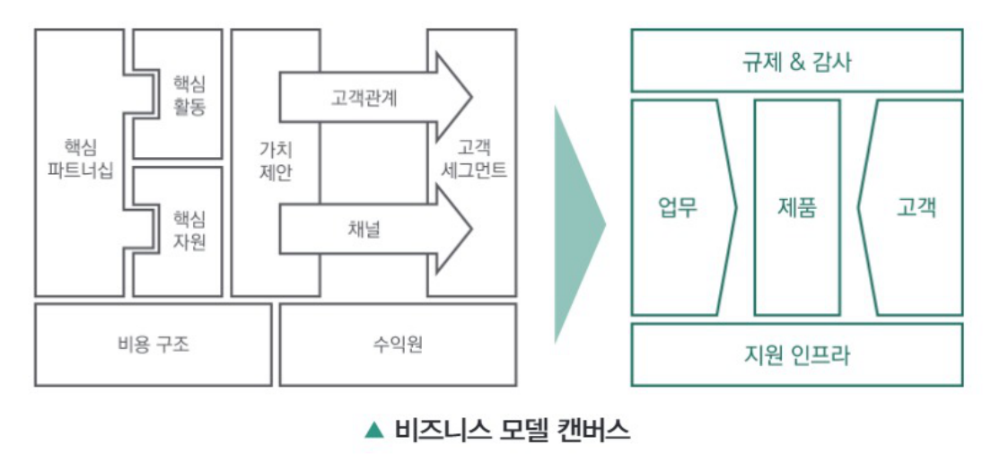
② 분석 기회 발굴의 범위 확장
- 현재 사업 방식이나 비즈니스에 대한 문제 해결은 최적화 및 단기 과제 형식으로 도출 가능하다.
- 새로운 문제의 발굴이나 장기적인 접근을 위해서는 환경과 경쟁 구도의 변화 및 역량의 재해석을 통한 혁신 관점의 분석 기회 추가 도출이 필요하다.
- 거시적 관점의 요인, 경쟁자의 동향, 시장의 니즈 변화, 역량의 재해석 등 새로운 관점의 접근이 필요하다.
| 관점 | 영역 | 내용 |
|---|---|---|
| 거시적 관점 | 사회 영역 (Social) | 고객영역을 확장하여 전체 시장을 사회, 문화, 구조적 트렌드 변화에 기반하여 분석 기회를 도출한다. |
| 기술 영역 (Technological) | 과학, 기술, 의학 등 최신 기술의 등장변화에 따른 역량 내재화와 제품 및 서비스 개발에 대한 분석 기회를 도출한다. | |
| 경제 영역 (Economic) | 산업과 금융 전반의 변동성과 경제 구조 변화 동향에 따른 시장 흐름을 파악하고 이에 대한 분석 기회를 도출한다. | |
| 환경 영역 (Environmental) | 환경과 관련된 정부, 사회단체, 시민사회의 관심과 규제 동향을 파악하고 이에 대한 분석 기회를 도출한다. | |
| 정치 영역 (Political) | 주요 정책방향, 정세, 지정학적 동향 등의 거시적인 흐름을 토대로 하여 분석 기회를 도출한다. |
| 관점 | 영역 | 내용 |
|---|---|---|
| 경쟁자 확대 관점 | 대체재 영역 (Substitute) | 현재 생산하고 있는 제품 또는 서비스의 대체재를 파악하고 이를 고려한 분석 기회를 도출한다. |
| 경쟁자 영역 (Competitor) | 현재 생산하고 있는 제품이나 서비스의 주요 경쟁자에 대한 동향을 파악하여 이를 고려한 분석 기회를 도출한다. | |
| 신규 진입자 영역 (New Entrant) | 향후 시장에서 파괴적인 역할을 수행할 수 있는 신규 진입자에 대한 동향을 파악하여 이를 고려한 분석 기회를 도출한다. | |
| 시장의 니즈 탐색 관점 | 고객 영역 (Customer) | 고객의 구매 동향 및 고객의 컨텍스트를 더욱 깊게 이해하여 제품 또는 서비스의 개선에 필요한 분석 기회를 도출한다. |
| 채널 영역 (Channel) | 자체 채널뿐 아니라 최종 고객에게 상품이나 서비스를 전달 가능한 모든 경로를 파악하여 경로별 채널 분석 기회를 확대하여 탐색한다. | |
| 영향자들 영역 (Influencer) | 주주, 투자자, 협의 및 기타 이해관계자의 주요 관심사항에 대하여 파악하고 분석 기회를 탐색한다. | |
| 역량의 재해석 관점 | 내부 역량 영역 (Competency) | 지식, 기술, 스킬 등 노하우와 인프라적인 유형 자산에 대해서도 폭넓게 재해석하고 해당 영역에서 분석 기회를 탐색한다. |
| 파트너와 네트워크 영역 (Partners & Network) | 관계사와 공급사 등의 역량을 활용해 수행할 수 있는 기능을 파악해 보고 이에 대한 분석 기회를 추가적으로 도출한다. |
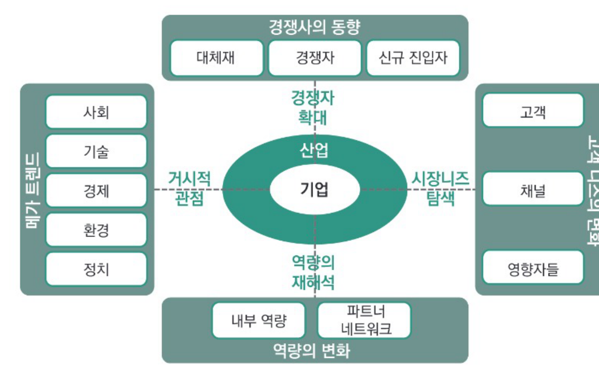
4) 상향식 접근 방식(Bottom Up Approach)
문제의 정의 자체가 어려운 경우 데이터를 기반으로 문제의 재정의 및 해결방안을 탐색하고 이를 지속적으로 개선하는 방식이다.
① 상향식 접근 방식의 특징
- 다량의 데이터 분석을 통해 왜(why) 그러한 일이 발생하는지 역으로 추적하면서 문제를 도출하거나 재정의할 수 있는 방식이다.
- 데이터를 활용하여 생각지도 못했던 인사이트 도출 및 시행착오를 통한 개선이 가능하다.
② 상향식 접근 방식의 등장배경
- 기존 하향식 접근 방식의 한계를 극복하기 위해 등장하였다.
- 하향식 접근 방식은 솔루션 도출은 유효하지만 새로운 문제 탐색은 어렵다.
- 하향식 접근 방식은 복잡하고 다양한 환경에서 발생한 문제에는 부적합하다.
- 논리적 단계별 접근법은 문제의 구조가 분명하고 이에 대한 해결책을 도출하기 위한 데이터가 분석가나 의사결정자에게 주어져 있음을 가정하고 있다.
③ 상향식 접근기반 전통적 분석 사고 극복방안
- 디자인 사고 접근법
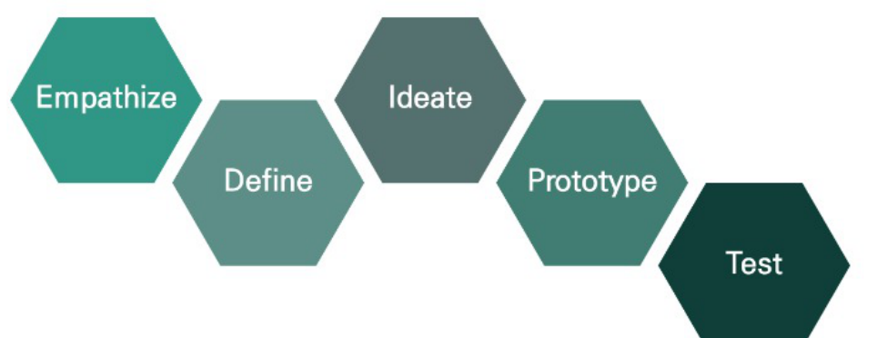
- 현장 관찰과 감정이입, 대상 관점으로의 전환을 수행한다.
- 통상적으로는 분석적으로 사물을 인식하려는 Why를 강조하나, 답을 미리 내는 것이 아니라 사물을 있는 그대로 인식하는 What 관점으로 접근한다.
- 객관적으로 존재하는 데이터 자체를 관찰하고 실제 행동으로 옮김으로써 대상을 좀 더 잘 이해하는 방식으로 접근한다.
- 비지도학습 방법에 의한 수행
- 목표값을 사전에 학습하거나 정의하지 않고 데이터 자체만을 가지고 결과를 도출한다.
- 새로운 유형의 인사이트를 도출하기에 유용한 방식이다.
- 데이터 마이닝의 연관규칙분석, 군집분석이나 기술통계 및 프로파일링 등이 대표적이다.
- 빅데이터 환경에서의 분석
- 인과관계(Know–why)에서 상관관계(Know–affinity) 분석으로 이동하였다.
- 통계적 분석환경에서는 인과관계 분석을 위해 가설을 설정하고 이를 검증하기 위해 모집단으로부터 표본을 추출하여 가설검증을 하였다.
- 빅데이터 분석환경에서는 인과관계, 상관관계, 연관분석을 통하여 다양한 문제를 해결할 수 있다.
④ 상향식 접근 방식의 문제 해결 방법
- 프로토타이핑 접근법 : 일단 먼저 분석을 시도해 보고 그 결과를 확인하면서 반복적으로 개선해 나가는 방식이다.
- 시행착오를 통하여 문제 해결을 시도하는 방식이다.
- 사용자가 요구사항이나 데이터를 정확히 정의하기 어렵고 원천 데이터도 명확하지 않을 때 주로 사용한다.
- 완전하지는 않지만 신속하게 해결책이나 모형을 제시하여 이를 바탕으로 문제를 더 명확하게 인식하고 필요한 데이터를 식별하여 구체화할 수 있다.
| 관점 | 내용 |
|---|---|
| 문제에 대한 인식 수준 |
|
| 필요 데이터 존재 여부의 불확실성 |
|
| 데이터 사용 목적의 가변성 |
|
| 특징 |
|
| 구성 |
|
- 수렴(Converge) 단계에서는 가능한 옵션을 도출하고, 발산(Diverge) 단계에서는 도출된 옵션을 분석하고 검증한다.
- 문제가 먼저 주어지고 이에 대한 해법을 찾아가는 하향식 접근 방식과 데이터를 기반으로 문제의 재정의 및 해결방안을 탐색하는 상향식 접근 방식이 있다.
- 분석 과제는 해결해야 할 다양한 문제들을 데이터 분석 문제로 변환하여 분석 프로젝트로 수행할 수 있는 과제정의서 형태로 도출한다.
- 분석 과제 정의서는 분석 프로젝트를 수행하는 이해관계자가 프로젝트의 방향을 설정하고 성공 여부를 판단할 수 있는 자료로 사용된다.
- 최적의 의사결정을 위해 혼합방식을 사용할 수 있으며, 동적인 환경에서 상향식 접근 방식의 발산과 하향식 접근 방식의 수렴 단계를 반복적으로 수행하며 상호 보완을 통해 분석의 가치를 극대화할 수 있다. 발산 단계에서는 가능한 옵션을 도출하며, 수렴 단계에서는 도출된 옵션을 분석하고 검증한다.
- 문제 탐색 단계, 문제 정의 단계, 해결방안 탐색 단계, 타당성 평가 단계로 구성되어 있다.
- 문제가 주어지고 이에 대한 해법을 찾기 위하여 각 과정이 체계화된 방식으로 최근 실시간으로 발생하고 있는 문제들에 대하여 적용할 수 있다.
- 문제 탐색 기법으로 비즈니스 모델 기반 문제 탐색, 외부 참조 모델 기반 문제 탐색, 분석 유즈케이스 정의 방법이 있다.
- 타당성 평가 단계에서는 경제적 타당성과 데이터 및 기술적 타당성을 검증하여야 한다.
- 하향식 접근 방식(Top Down Approach)은 문제가 주어지고 이에 대한 해법을 찾기 위하여 각 과정이 체계적으로 단계화되어 수행하는 전통적 분석 과제 발굴 방식으로 근래의 문제들은 변화가 심하여 문제를 사전에 정확하게 정의하기 어렵다.
- 문제의 정의 자체가 어려운 경우 데이터를 기반으로 문제의 재정의 및 해결방안을 탐색하고 이를 지속적으로 개선하는 방식이다.
- 다량의 데이터 분석을 통해 왜(why) 그러한 일이 발생하는지 역으로 추적하면서 문제를 도출하거나 재정의할 수 있는 방식이다.
- 디자인 사고 접근법은 사물을 있는 그대로 인식하는 What 관점을 강조하지만, 분석적으로 사물을 인식하려는 Why 관점으로 접근한다.
- 프로토타이핑 접근법은 일단 먼저 분석을 시도해 보고 그 결과를 확인하면서 반복적으로 개선해 나가는 방식이다.
- 디자인 사고 접근법은 통상적으로는 분석적으로 사물을 인식하려는 Why를 강조하나, 답을 미리 내는 것이 아니라 사물을 있는 그대로 인식하는 What 관점으로 접근한다.
05 데이터 분석 방안
1) 분석 방법론
데이터 분석 시 품질확보를 위하여 단계별로 수행해야 하는 활동, 작업, 산출물을 정의한다.
- 데이터 분석을 효과적으로 수행하기 위하여 이를 체계화한 절차와 방법이 정리된 데이터 분석 방법론의 수립이 필수적이다.
- 프로젝트는 한 개인의 역량이나 조직의 우연한 성공에 의해서는 안 되고 일정 품질 수준 이상의 산출물과 프로젝트의 성공 가능성을 제시해야 한다.
① 분석 방법론의 구성요건
- 상세한 절차(Procedures)
- 방법(Methods)
- 도구와 기법(Tools & Techniques)
- 템플릿과 산출물(Templates & Outputs)
- 어느 정도의 지식만 있으면 활용 가능한 수준의 난이도
② 분석 방법론의 생성과정(선순환 과정)
| 형식화 |
|
| 체계화 |
|
| 내재화 |
|
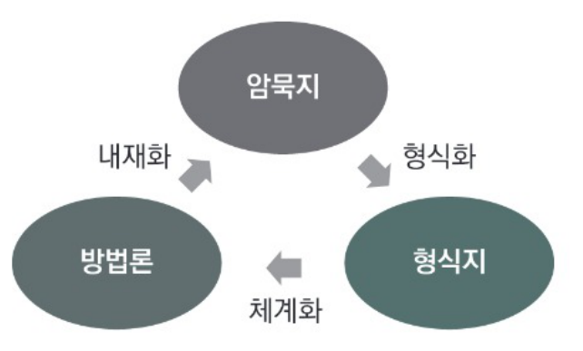
2) 계층적 프로세스 모델 구성
분석 방법론은 일반적으로 계층적 프로세스 모델 형태로 구성 가능하며, 단계, 태스크, 스텝 3계층으로 구성된다.
① 최상위 계층 – 단계(Phase)
- 프로세스 그룹을 통하여 완성된 단계별 산출물을 생성한다.
- 각 단계는 기준선으로 설정되어 관리되어야 하며 버전관리 등을 통하여 통제한다.
② 중간 계층 – 태스크(Task)
- 각 태스크는 단계를 구성하는 단위 활동이다.
- 물리적 또는 논리적 단위로 품질검토가 가능하다.
③ 최하위 계층 – 스텝(Step)
- WBS(Work Breakdown Structure)의 워크패키지(Work Package)이다.
- 입력자료, 처리 및 도구, 출력자료로 구성된 단위 프로세스이다.
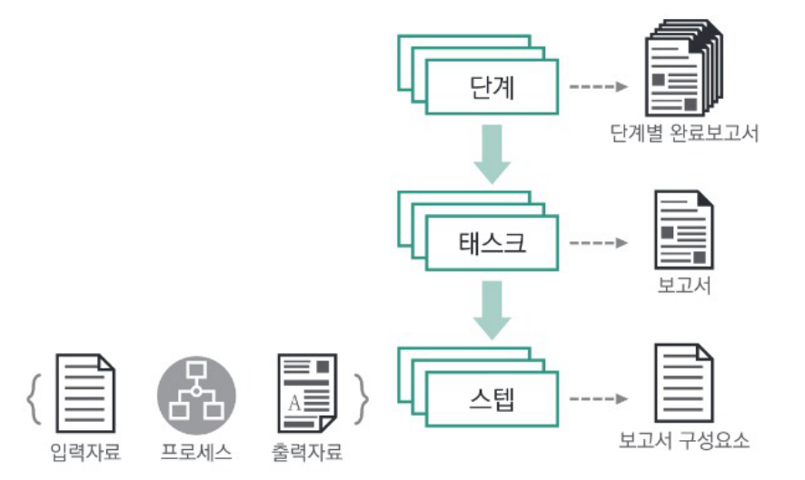
3) 소프트웨어개발생명주기 활용
분석 방법론은 소프트웨어 공학의 소프트웨어개발생명주기를 활용하여 구성할 수도 있다.
- 소프트웨어개발생명주기(Software Development Life Cycle, SDLC)는 소프트웨어에 대해 요구분석과 설계, 구현과정을 거쳐 설치, 운영과 유지보수, 그리고 폐기할 때까지의 전 과정을 가시적으로 표현한 것이다.
| 계획 (요구명세) |
|
| 요구분석 |
|
| 설계 |
|
| 구현 |
|
| 시험 |
|
| 유지보수 |
|
① 폭포수 모형(Waterfall Model)
고전적 Life Cycle Paradigm으로 분석, 설계, 개발, 구현, 시험 및 유지보수 과정을 순차적으로 접근하는 방법이다.
- 소프트웨어 개발을 단계적, 순차적, 체계적 접근 방식으로 수행한다.
- 각 단계별로 철저히 매듭짓고 다음 단계를 진행한다.
- 개념 정립에서 구현까지 하향식 접근 방법을 사용한다.
- 전 단계의 산출물은 다음 단계의 기초가 된다.
- 결과물이 후반부에 가서야 구체화되므로 문제점이 뒤늦게 발견된다.
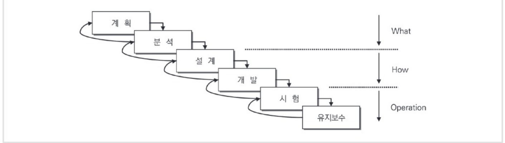
② 프로토타입 모형(Prototype Model)
사용자의 요구사항을 충분히 분석할 목적으로 시스템의 일부분을 일시적으로 간략히 구현한 다음 다시 요구사항을 반영하는 과정을 반복하는 개발모형이다.
- 실험적 프로토타입 : 요구분석의 어려움을 해결하기 위해 실제 개발될 소프트웨어의 일부분을 직접 개발함으로써 의사소통의 도구로 활용한다.
- 진화적 프로토타입 : 프로토타입을 요구분석의 도구로만 활용하는 것이 아니라, 이미 개발된 프로토타입을 지속적으로 발전시켜 최종 소프트웨어로 발전시킨다.
- 요구 분석의 어려움 해결을 통해 사용자의 참여를 유도한다.
- 요구사항 도출과 이해에 있어 사용자와의 커뮤니케이션 수단으로 활용 가능하다.
- 사용자 자신이 원하는 것이 무엇인지 구체적으로 잘 모르는 경우 간단한 시제품으로 개발할 수 있다.
- 개발 타당성을 검토하는 수단으로 활용할 수 있다.
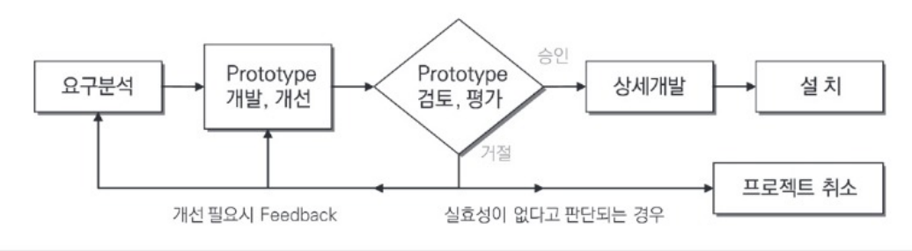
③ 나선형 모형(Spiral Model)
시스템을 개발하면서 생기는 위험을 최소화하기 위해 나선을 돌면서 점진적으로 완벽한 시스템으로 개발하는 모형이다.
- 프로젝트의 완전성 및 위험 감소와 유지보수가 용이하다.
- 관리가 중요하나 매우 어렵고 개발시간이 장기화될 가능성이 있다.
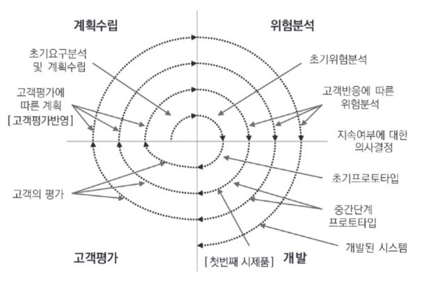
④ 반복적 모형(Iterative Development Model)
사용자의 요구사항 일부분 혹은 제품의 일부분을 반복적으로 개발하여 최종 시스템으로 완성하는 모형이다.
- 증분형 모형(Incremental Model) : 사용자 요구사항과 제품의 일부분을 반복적으로 개발하며 대상범위를 확대해 나아가서 최종제품을 완성하는 방법이다.
- 첫 번째 검증은 핵심제품, 몇 사람만으로 구현 가능하다.
- 프로토타입 모형과 같이 반복적이나 각 점증이 갖는 제품 인도에 초점을 두고 있다.
- 규모가 큰 개발 조직일 경우 자원을 각 증분 개발에 충분히 할당할 수 있어 각 증분의 병행 개발로 기간을 단축시킬 수 있다.
- 증분의 수가 많고 병행 개발이 빈번하게 이루어지면 관리가 어려워지고, PM은 증분 개발 활동 간 조율에 많은 노력이 필요하다.
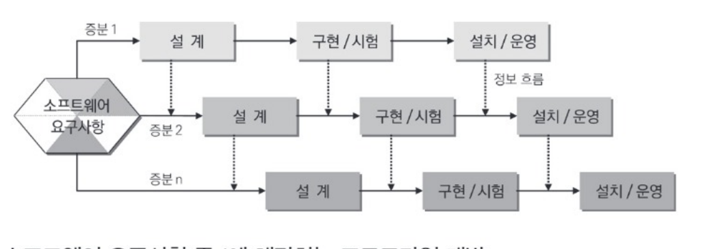
- 증분 1 : 소프트웨어 요구사항 중 1에 해당하는 프로토타입 개발
- 증분 2 : 소프트웨어 요구사항 중 2에 해당하는 프로토타입 개발
- 증분 n : 소프트웨어 요구사항 중 n에 해당하는 프로토타입 개발
- 정보흐름 : 각 프로토타입 개발과정에서 단계별로 타 프로토타입의 개발과정에 영향
- 진화형 모형(Evolution Model) : 시스템이 가지는 여러 구성요소의 핵심부분을 개발한 후 각 구성요소를 지속적으로 발전시켜 나가는 방법이다.
- 다음 단계로의 진화를 위해 전체 과정에 대한 개요가 필요하다.
- 프로토타입을 만들고 이를 다시 분석함으로써 요구사항을 진화시키는 방법이다.
- 프로토타입의 시스템은 재사용을 전제로 한다.
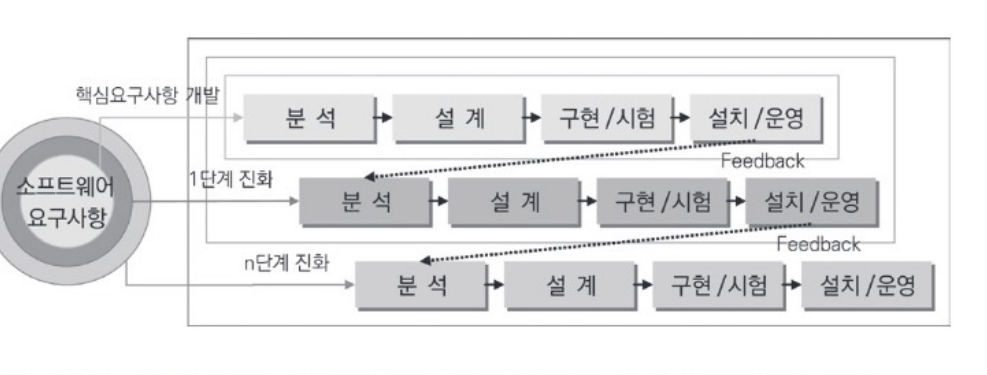
- 핵심요구사항 개발 : 소프트웨어 요구사항의 핵심적인 부분(프로토타입)을 개발
- 1단계 진화 : 핵심요구사항 개발과정에서 산출된 프로토타입을 재분석하여 요구사항 진화
- n단계 진화 : n−1의 요구사항 개발과정에서 산출된 프로토타입을 재분석하여 최종 완성
- Feedback : 각 단계의 프로토타입을 설치/운영하여 발생하는 요구사항들을 차기 개발에 반영
| 폭포수 모형 | 검토 및 승인을 거쳐 순차적, 하향식으로 개발이 진행된다. | |
| 장점 |
| |
| 단점 |
| |
| 프로토타입 모형 | 시스템의 핵심적인 기능을 먼저 만들어 평가한 후 구현한다. | ||
| 장점 |
| ||
| 단점 |
| ||
| 나선형 모형 | 폭포수 모형과 프로토타입 모형의 장점에 위험분석을 추가하였다. | ||
| 구현 단계 | 계획수립 | 목표, 기능 선택, 제약조건을 설정한다. | |
| 위험분석 | 기능 선택의 우선순위 및 위험요소를 분석하고 제거한다. | ||
| 개발 | 선택된 기능을 개발한다. | ||
| 고객평가 | 개발 결과를 평가한다. | ||
| 장점 |
| ||
| 단점 | 관리가 복잡하다. | ||
| 반복적 모형 | 시스템을 여러 번 나누어 릴리즈하는 방법이다. | ||
| Incremental | 기능을 분해한 후 릴리즈별 기능을 추가 개발한다. | ||
| Evolution | 전체 기능을 대상으로 하되 릴리즈를 진행하면서 기능이 완벽해진다. | ||
⑤ 소프트웨어개발생명주기 모형 선정 기준
- 프로젝트의 규모와 성격
- 개발에 사용되는 방법과 도구
- 개발에 소요되는 시간과 비용
- 개발과정에서의 통제수단과 소프트웨어 산출물 인도 방식
- 명확한 절차, 방법, 도구, 템플릿, 산출물, 그리고 전문지식이 담긴 매뉴얼을 제공해야 한다.
- 여러 사람들의 내재화된 습관을 체계화한 후 전문가에 의해 형식화되어 생성된다.
- 일반적으로 계층적 프로세스 모델 형태로 구성 가능하며, 단계, 스텝, 워크패키지 3계층으로 구성된다.
- 데이터 분석을 효과적으로 수행하기 위하여 분석 절차를 체계적으로 정리한 방법이다.
- 분석 방법론은 상세한 절차(Procedures), 방법(Methods), 도구와 기법(Tools & Techniques), 템플릿과 산출물(Templates & Outputs), 어느 정도의 지식만 있으면 활용 가능한 수준의 난이도를 구성요건으로 갖추어야 한다.
- 분석 방법론은 형식화, 체계화, 내재화의 선순환 과정을 통해 생성된다.
- 분석 방법론은 일반적으로 계층적 프로세스 모델 형태로 구성 가능하며, 단계, 태스크, 스텝 3계층으로 구성된다. 태스크는 각 단계를 구성하는 단위 활동이며, 스텝은 태스크의 하위 층으로 WBS의 워크패키지를 말한다.
- 폭포수 모형은 의사소통을 향상시킨다.
- 나선형 모형은 계획수립, 위험분석, 개발, 고객평가 단계로 구성되어 있다.
- 원형 모형은 이해하기 쉽고 관리가 용이하다.
- 반복적 모형은 증분형 모형과 진화형 모형이 존재하며, 진화형 모형의 품질이 더 우수하다.
- 폭포수 모형은 요구사항 도출이 어려우며, 원형 모형이 의사소통을 향상시킨다.
- 원형 모형은 사용자로 하여금 완제품으로 오해 받기 쉽고 폐기되는 프로토타입이 존재하며, 폭포수 모형이 이해하기 쉽고 관리가 용이하다.
- 증분형 모형과 진화형 모형은 서로 필요성이 다를 뿐이며, 증분형 모형은 폭포수 모형의 변형으로 각 증분을 따로 개발 및 통합하여 개발 기간을 단축시키고, 진화형 모형은 시스템의 요구사항을 사전에 정의하기 어려운 경우 사용하여 개발의 어려움을 최소화하는 것이다.
4) KDD 분석 방법론
KDD(Knowledge Discovery in Database)는 1996년 Fayyad가 통계적인 패턴이나 지식을 탐색하는 데 활용할 수 있도록 체계적으로 정리한 프로파일링 기술 기반의 데이터 마이닝 프로세스이다.
① KDD 분석 방법론의 9가지 프로세스
- 분석 대상 비즈니스 도메인의 이해
- 분석 대상 데이터셋 선택과 생성
- 데이터에 포함되어 있는 잡음(Noise)과 이상값(Outlier) 등을 제거하는 정제작업이나 선처리
- 분석 목적에 맞는 변수를 찾고 필요시 데이터의 차원을 축소하는 데이터 변경
- 분석 목적에 맞는 데이터 마이닝 기법 선택
- 분석 목적에 맞는 데이터 마이닝 알고리즘 선택
- 데이터 마이닝 시행
- 데이터 마이닝 결과에 대한 해석
- 데이터 마이닝에서 발견된 지식 활용
② KDD 분석 방법론의 분석절차
데이터 분석은 데이터셋(Dataset) 선택, 데이터 전처리, 데이터 변환, 데이터 마이닝, 데이터 마이닝 결과 평가 총 5단계에 걸쳐 진행된다.
| 단계 | 내용 | |
|---|---|---|
| 1 | 데이터셋 선택 (Selection) |
|
| 2 | 데이터 전처리 (Preprocessing) |
|
| 3 | 데이터 변환 (Transformation) |
|
| 4 | 데이터 마이닝 (Data Mining) |
|
| 5 | 데이터 마이닝 결과 평가 (Interpretation/ Evaluation) |
|
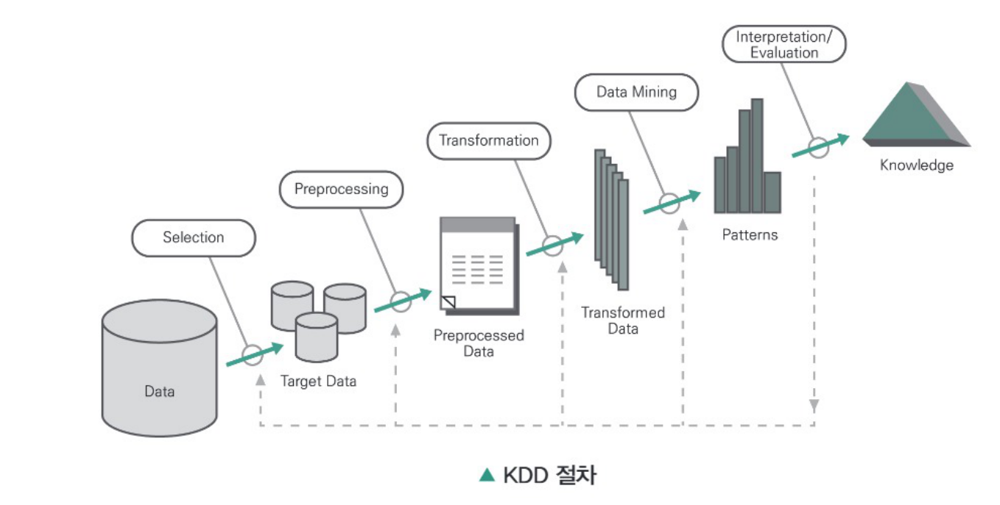
5) CRISP–DM 분석 방법론
CRISP–DM(Cross Industry Standard Process for Data Mining)은 계층적 프로세스 모델로써 4계층으로 구성된 데이터 마이닝 프로세스이다.
① CRISP–DM 분석 방법론의 4계층
- 최상위 레벨 : 여러 개의 단계(Phases)로 구성된다.
- 일반화 태스크(Generic Tasks) : 데이터 마이닝의 단일 프로세스를 완전하게 수행하는 단위이다.
- 세분화 태스크(Specialized Tasks) : 일반화 태스크를 구체적으로 수행한다.
- 프로세스 실행(Process Instances) : 데이터 마이닝을 구체적으로 실행한다.
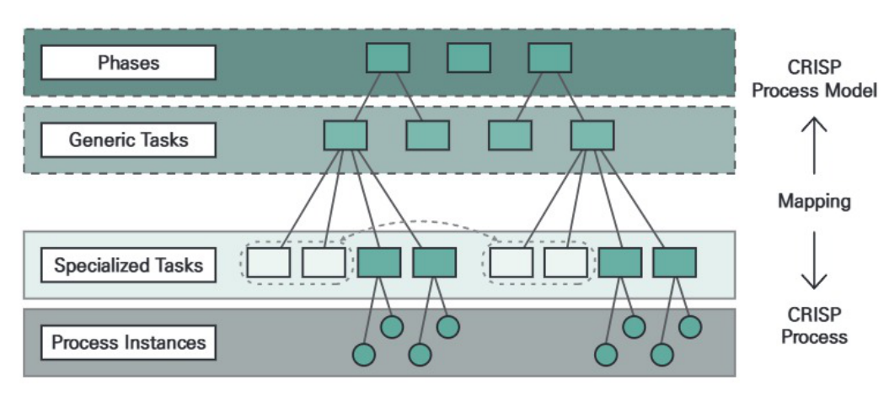
② CRISP–DM 분석 방법론의 분석절차
| 단계 | 내용 | 세부업무 |
|---|---|---|
| 업무 이해 (Business Understanding) |
|
|
| 데이터 이해 (Data Understanding) |
|
|
| 데이터 준비 (Data Preparation) |
|
|
| 모델링 (Modeling) |
|
|
| 평가 (Evaluation) |
|
|
| 전개 (Deployment) |
|
|
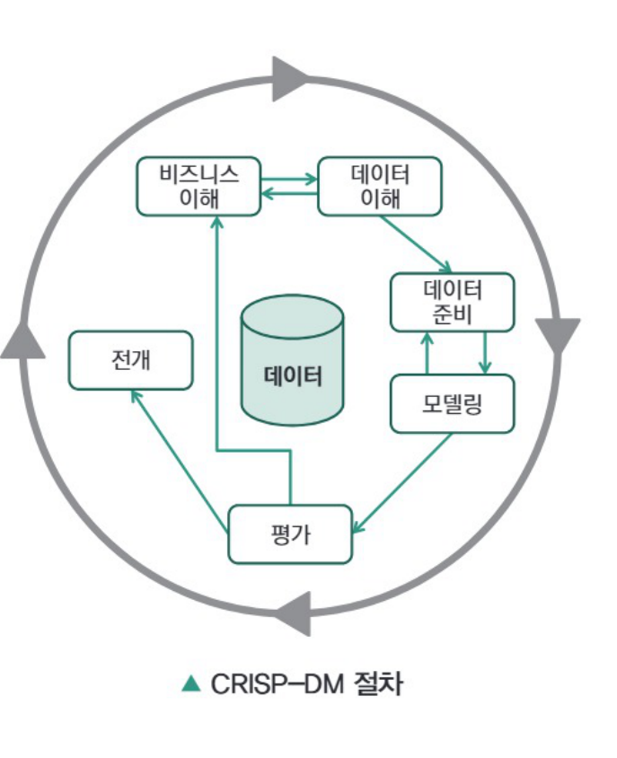
③ CRISP–DM과 KDD 분석 방법론의 비교
| CRISP–DM 분석 방법론 | KDD 분석 방법론 |
|---|---|
| 업무 이해(Business Understanding) | |
| 데이터 이해(Data Understanding) | 데이터셋 선택(Selection) |
| 데이터 전처리(Preprocessing) | |
| 데이터 준비(Data Preparation) | 데이터 변환(Transformation) |
| 모델링(Modeling) | 데이터 마이닝(Data Mining) |
| 평가(Evaluation) | 데이터 마이닝 결과 평가 (Interpretation/Evaluation) |
| 전개(Deployment) |
6) SEMMA 분석 방법론
SEMMA(Sample, Explore, Modify, Model and Assess)는 SAS Institute의 주도로 만들어진 기술과 통계 중심의 데이터 마이닝 프로세스이다.
① SEMMA 분석 방법론의 특징
- SAS Institute의 데이터 마이닝 도구와 손쉽게 접목하여 활용할 수 있다.
- 주로 데이터 마이닝 프로젝트의 모델링 작업에 중점을 두고 있다.
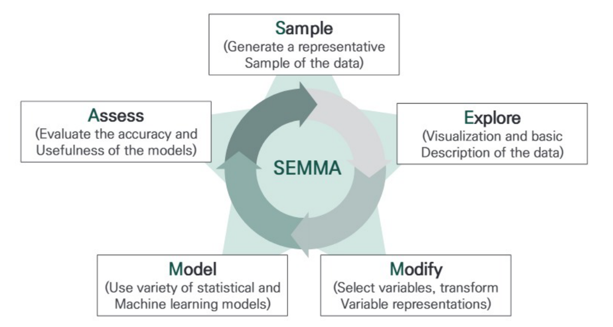
② SEMMA 분석 방법론의 분석절차
| 단계 | 내용 | 세부요소/산출물 |
|---|---|---|
| 추출 (Sample) |
|
|
| 탐색 (Explore) |
|
|
| 수정 (Modify) |
|
|
| 모델링 (Model) |
|
|
| 평가 (Assess) |
|
|
- 데이터 마이닝 외 다른 분야에는 응용하기 어렵다는 단점이 있다.
- 데이터에서 패턴을 찾는 과정을 9개의 프로세스로 제시한다.
- 데이터셋 선택, 데이터 전처리, 데이터 변환, 데이터 마이닝, 데이터 마이닝 결과 평가 총 5단계에 걸쳐 진행된다.
- 체계적으로 정리한 프로파일링 기술 기반의 데이터 마이닝 프로세스이다.
- KDD(Knowledge Discovery in Database) 분석 방법론은 데이터 마이닝, 기계학습, 인공지능, 패턴인식, 시각화 등에 응용 가능하다.
- 데이터 탐색과 이해 및 데이터를 통한 문제 인식과 해결이 가능하다.
- 비즈니스 요구사항에 맞게 데이터 마이닝을 반복적으로 수행할 수 있다.
- 계층적 프로세스 모델로써 3계층으로 구성된 데이터 마이닝 프로세스이다.
- 업무 이해, 데이터 이해, 데이터 준비, 모델링, 평가, 전개 총 6단계에 걸쳐 진행된다.
- CRISP–DM(Cross Industry Standard Process for Data Mining) 분석 방법론은 계층적 프로세스 모델로써 4계층으로 구성된 데이터 마이닝 프로세스이다. CRISP–DM 분석 방법론의 4계층은 최상위 레벨, 일반화 태스크(Generic Tasks), 세분화 태스크(Specialized Tasks), 프로세스 실행(Process Instances) 단계로 구성되어 있다.
- SAS Institute의 데이터 마이닝 도구와 손쉽게 접목하여 활용할 수 있다.
- 응용 서비스 개발을 위한 3계층으로 구성되었다.
- 주로 데이터 마이닝 프로젝트의 모델링 작업에 중점을 두고 있다.
- 추출, 탐색, 수정, 모델링, 평가 총 5단계에 걸쳐 진행된다.
- SEMMA(Sample, Explore, Modify, Model and Assess) 분석 방법론은 SAS Institute의 주도로 만들어진 기술과 통계 중심의 데이터 마이닝 프로세스이다. 응용 서비스 개발을 위한 3계층으로 구성된 방법론은 빅데이터 분석 방법론이다.
06 빅데이터 분석 방법론
1) 빅데이터 분석 방법론 개요
분석 방법론은 응용 서비스 개발을 위한 3계층으로 구성되었다.
| 단계 (Phase) |
|
| 태스크 (Task) |
|
| 스텝 (Step) |
|
- 각 단계별로 세부 태스크와 스텝이 정의되어 있다.
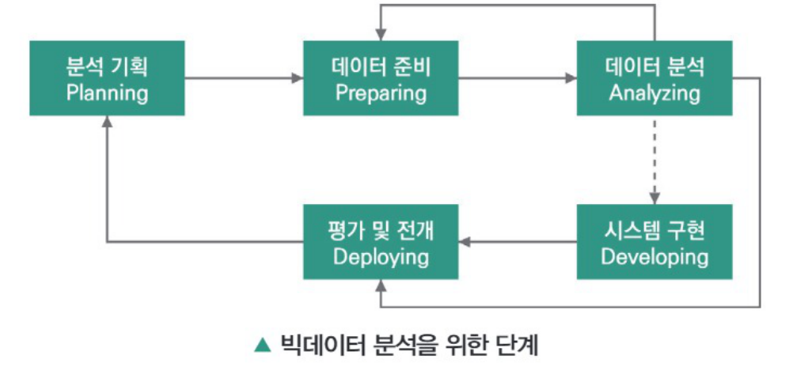
2) 빅데이터 분석 방법론의 개발절차
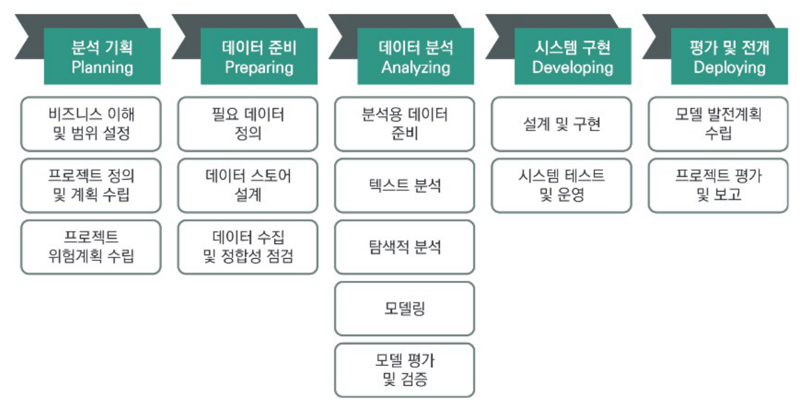
① 분석 기획(Planning)
| 분석 기획 | 비즈니스 이해 및 범위 설정 |
|
| 프로젝트 정의 및 계획 수립 |
| |
| 프로젝트 위험 계획 수립 |
|
- 비즈니스 이해 및 범위 설정
- 비즈니스에 대한 이해와 도메인에 대한 문제점을 파악한다.
- 업무 매뉴얼 또는 업무 전문가의 도움이 필요하다.
- 향후 프로젝트 진행을 위한 방향을 설정하고, 프로젝트 목적에 부합한 범위를 설정한다.
- 프로젝트의 범위를 명확하게 파악하기 위해 구조화된 명세서를 작성한다.
- 프로젝트 정의 및 계획 수립
- 모형의 운영 이미지를 설계하고 모형 평가 기준을 설정한다.
- 프로젝트의 목표 및 KPI, 목표 수준 등을 구체화하여 상세한 프로젝트 정의서를 작성한다.
- 데이터 확보계획이나 분석 방법, 일정, 예산, 품질 등을 포함하는 프로젝트 수행 계획서를 작성한다.
- 프로젝트 산출물을 중심으로 WBS(Work Breakdown Structure)를 작성한다.
- 프로젝트 위험계획 수립
- 프로젝트를 진행하면서 발생 가능한 모든 위험을 식별하여 사전 대응방안을 수립한다.
- 식별된 위험은 위험의 영향도와 빈도, 발생가능성에 따라 위험의 우선순위를 설정한다.
- 예상되는 위험에 대한 대응은 회피, 전이, 완화, 수용으로 구분하여 위험 관리 계획서를 작성한다.
② 데이터 준비(Preparing)
| 데이터 준비 | 필요 데이터 정의 |
|
| 데이터 스토어 설계 |
| |
| 데이터 수집 및 정합성 점검 |
|
- 필요 데이터 정의
- 전사 차원에서 필요한 데이터를 정의한다.
- 정형, 비정형, 반정형 등 모든 내외부 데이터를 대상으로 데이터의 속성, 오너, 관련 시스템 담당자 등을 포함한 데이터 정의서를 작성한다.
- 내부 데이터 획득 시 부서 간 업무협조와 개인정보보호 및 정보보안과 관련된 문제점을 사전에 파악한다.
- 외부 데이터 획득 시 시스템 간 다양한 인터페이스 및 법적 이슈를 고려한다.
- 구체적인 데이터 획득방안을 상세하게 수립하여 혹시 모를 프로젝트의 지연을 방지한다.
- 데이터 스토어 설계
- 전사 차원의 데이터 스토어를 설계한다.
- 정형, 비정형, 반정형 데이터를 모두 저장할 수 있도록 설계한다.
- 데이터의 효율적인 저장과 활용을 위해 데이터 스토어의 논리적, 물리적 설계를 구분하여 수행한다.
- 데이터 수집 및 정합성 점검
- 크롤링, 시스템 간 실시간 처리, 배치 처리, 데이터베이스 간 연동, API를 이용한 개발, ETL 도구 활용, 스크립트 작성 등 다양한 방법이 있다.
- 데이터 거버넌스에 근거하여 메타 데이터 및 데이터 사전 등이 작성되어 적용되고 있는지 주기적으로 확인한다.
- 데이터의 품질을 확보하기 위한 정합성 검증을 실시하며, 이를 위해 데이터 스토어 품질 점검을 수행한다.
- 데이터 품질개선이 필요한 부분에 대하여 보완 작업을 진행한다.
③ 데이터 분석(Analyzing)
| 데이터 분석 | 분석용 데이터 준비 |
|
| 텍스트 분석 |
| |
| 탐색적 분석 |
| |
| 모델링 |
| |
| 모델 평가 및 검증 |
|
- 분석용 데이터 준비
- 프로젝트의 목표를 정확하게 인식하고 세부적인 비즈니스 룰을 파악한다.
- 분석에 필요한 데이터의 범위를 확인하여 데이터베이스나 구조화된 형태로 구성한다.
- 필요한 경우 적절한 가공을 통하여 입력 데이터로 사용될 수 있도록 한다.
- 분석용 작업 공간과 전사 차원의 데이터 스토어로 분리할 수도 있다.
- 텍스트 분석
- 데이터 스토어에서 필요한 텍스트 데이터를 추출하여 다양한 기법으로 분석하고 모형을 구축한다.
- 텍스트 분석 결과는 모델링 태스크와 연동하여 프로젝트 목적에 부합하는 최종 모형을 구축한다.
- 구축된 모형은 텍스트 시각화 도구로 모형의 의미 전달을 명확화한다.
- 탐색적 분석
- 분석용 데이터셋에 대한 정합성 검토, 데이터 요약, 데이터 특성을 파악하고 모델링에 필요한 데이터를 편성한다.
- 다양한 관점으로 평균, 분산 등 기초 통계량을 산출하여 데이터의 분포와 변수간의 관계 등 데이터 자체의 특성과 통계적 특성을 파악한다.
- 시각화를 탐색적 데이터 분석을 위한 도구로 활용하여 데이터의 가독성을 명확히 하고 데이터의 형상 및 분포 등 데이터 특성을 파악한다.
- 모델링 또는 향후 시스템 구현을 위한 사용자 인터페이스 또는 프로토타입으로 시각화를 활용한다.
- 모형의 시스템화를 위한 시각화를 목적으로 활용할 경우 시각화 기획, 시각화 설계, 시각화 구현 등 별도의 프로세스를 따라 진행이 필요하다.
- 모델링
- 모델링을 효과적으로 진행하기 위하여 사전에 데이터셋을 학습용과 테스트용으로 분할하여 준비한다.
- 모형에 적용하는 기법에 따라 교차검증을 수행하거나 앙상블 기법을 적용할 경우 데이터 분할 또는 검증 횟수, 생성모형 개수 등의 설정이 필요하다.
- 기계학습 등을 이용한 데이터 모델링은 훈련용 데이터를 활용하여 분류, 예측, 군집 등의 모형을 만들어 가동 중인 운영 시스템에 적용할 수 있다.
- 필요한 경우 비정형 데이터 분석결과를 통합적으로 활용하여 프로젝트 목적에 맞는 통합 모델링을 수행할 수 있다.
- 개발된 모형을 활용하기 위해 상세한 알고리즘 설명서 작성과 모니터링 방안이 필요하다.
- 알고리즘 설명서는 상황에 따라 의사코드(Pseudocode) 수준으로 상세히 작성하여야 한다.
- 개발된 모형의 안정적인 운영을 위한 모니터링 방안을 수립하여야 한다.
- 모델 평가 및 검증
- 프로젝트 정의서의 평가 기준에 따라 모형의 완성도를 평가한다.
- 품질관리 차원에서 모형 평가 프로세스를 진행한다.
- 모형 결과 보고서 내의 알고리즘을 파악하고 테스트용 데이터나 검증을 위한 별도의 데이터를 활용하여 모형의 객관성과 실무 적용성을 검증한다.
- 요구되는 성능 목표에 미달하는 경우 모형 튜닝 작업을 수행한다.
④ 시스템 구현(Developing)
| 시스템 구현 | 설계 및 구현 |
|
| 시스템 테스트 및 운영 |
|
- 설계 및 구현
- 시스템 및 데이터 아키텍처와 사용자 인터페이스 설계를 진행한다.
- 가동 중인 시스템에 적용하기 위해서는 운영 시스템에 대한 분석이 선행되어야 한다.
- 사용 중인 정보시스템 개발방법론을 응용하여 적용 가능하다.
- 시스템 설계서를 바탕으로 BI 패키지를 활용하거나 프로그래밍을 통하여 모형을 구현한다.
- 시스템 테스트 및 운영
- 단위 테스트, 통합 테스트, 시스템 테스트 등을 실시한다.
- 시스템 테스트는 품질관리 차원에서 진행함으로써 적용된 시스템의 객관성과 완전성을 확보한다.
- 시스템 운영자, 사용자를 대상으로 필요한 교육을 실시한다.
- 시스템 운영계획을 수립한다.
⑤ 평가 및 전개(Deploying)
| 평가 및 전개 | 모델 발전계획 수립 |
|
| 프로젝트 평가 및 보고 |
|
- 모델 발전계획 수립
- 모형의 생명주기를 설정하고 주기적인 평가를 실시하여 모형을 유지보수하거나 재구축하기 위한 방안을 마련한다.
- 모형 업데이트를 자동화하는 방안을 수립하여 적용할 수 있다.
- 발전계획을 상세하게 수립하여 모형의 계속성을 확보해야 한다.
- 프로젝트 평가 및 보고
- 프로젝트 성과를 정량적 성과, 정성적 성과로 나눠 성과 평가서를 작성한다.
- 프로젝트 진행과정에서 산출된 지식이나 프로세스 등 산출물을 자산화한다.
- 프로젝트 최종 보고서를 작성하여 보고한 후 종료한다.
- 응용 서비스 개발을 위한 3계층으로 구성되어 있다.
- 각 단계별로 세부 태스크와 스텝이 정의되어 있다.
- 분석 기획, 데이터 준비, 데이터 분석, 시스템 구현, 평가 및 전개 총 5단계로 걸쳐 진행된다.
- 탐색적 분석과 모델링을 위한 용어사전이 필요하다.
- 데이터 분석 단계에서 텍스트 분석을 위해 용어사전이 필요하며 업무 도메인에 맞도록 작성해야 한다.
- 데이터 분석 단계에서는 분석용 데이터 준비, 텍스트 분석, 탐색적 분석, 모델링, 모델 평가 및 검증을 한다.
- 데이터 준비 단계에서는 비즈니스 이해 및 범위 설정, 프로젝트 정의 및 계획 수립, 프로젝트 위험계획 수립을 한다.
- 시스템 구현 단계에서는 설계 및 구현, 시스템 테스트 및 운영을 한다.
- 평가 및 전개 단계에서는 모델 발전계획 수립, 프로젝트 평가 및 보고를 한다.
- 데이터 준비 단계에서는 필요 데이터 정의, 데이터 스토어 설계, 데이터 수집 및 정합성 점검을 수행한다. 비즈니스 이해 및 범위 설정, 프로젝트 정의 및 계획 수립, 프로젝트 위험계획 수립은 분석 기획 단계에서 수행한다.
07 데이터 분석 거버넌스
1) 데이터 분석 거버넌스(Governance) 개요
① 데이터 분석 거버넌스의 필요성
- 데이터 분석 업무를 하나의 기업 문화로 정착하고 이를 지속적으로 고도화 해 나가기 위해 필요하다.
② 데이터 분석 거버넌스의 구성요소
- 데이터 분석 기획과 관리를 수행하는 조직(Organization)
- 데이터 분석 과제 기획과 운영 프로세스(Process)
- 데이터 분석 지원 인프라(System)
- 데이터 거버넌스(Data)
- 데이터 분석 교육 및 마인드 육성 체계(Human Resource)
2) 데이터 분석 기획과 관리를 수행하는 조직
3) 데이터 분석 과제 기획과 운영 프로세스
① 데이터 분석 과제 관리 프로세스의 구성
- 과제 발굴 단계
- 개별 조직이나 개인이 도출한 데이터 분석 아이디어를 발굴한다.
- 발굴된 아이디어를 과제화하여 데이터 분석 과제 풀로 관리한다.
- 데이터 분석 프로젝트를 선정하는 작업을 수행한다.
- 과제 수행 및 모니터링 단계
- 데이터 분석을 수행할 팀을 구성한다.
- 데이터 분석 과제 실행 시 지속적인 모니터링을 수행한다.
- 데이터 분석 과제 결과를 공유하고 개선한다.
② 데이터 분석 과제 관리 프로세스의 특징
- 조직 내에 데이터 분석 문화를 내재화하여 경쟁력을 확보할 수 있다.
- 결과물을 잘 축적하여 관리함으로써 향후 유사 데이터 분석 과제 수행 시 시행착오를 최소화할 수 있다.
- 데이터 분석 프로젝트를 효율적으로 진행할 수 있다.
③ 데이터 분석 과제 관리 프로세스
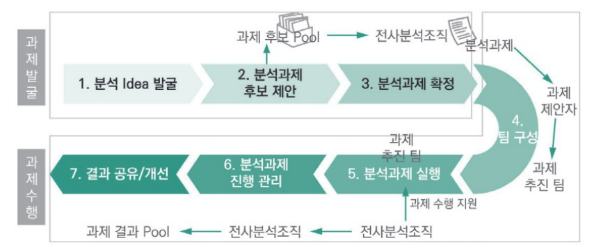
4) 데이터 분석 지원 인프라
① 데이터 분석 플랫폼 구축
- 데이터 분석 마스터 플랜을 기획하는 단계에서부터 장기적, 지속적, 안정적으로 활용할 수 있도록 고려한다.
- 단기적으로 구축하기 쉬운 개별 시스템보다는 확장성을 고려한 플랫폼 구조 도입이 적절하다.
| 개별 시스템 | 플랫폼 구조 |
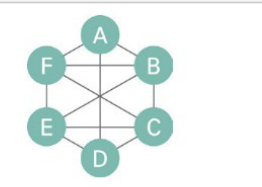 |
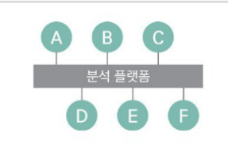 |
|
|
② 데이터 분석 플랫폼의 정의
- 데이터 분석 서비스를 위한 응용프로그램이 실행될 수 있는 환경과 기초를 이루는 컴퓨터 시스템이다.
③ 데이터 분석 플랫폼의 특징
- 데이터 분석에 필요한 프로그래밍 및 실행, 이를 서비스할 수 있는 환경을 제공한다.
- 새로운 데이터 분석 니즈가 발생할 경우 개별 시스템을 추가하지 않으면서도 추가적인 서비스 제공이 가능하다. (확장성 증대)
④ 데이터 분석 플랫폼의 구성요소
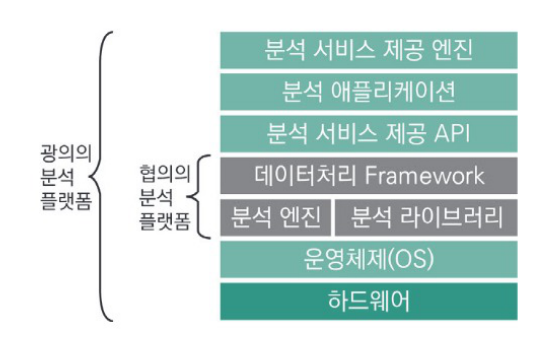
5) 데이터 거버넌스
① 데이터 거버넌스의 필요성
- 개별 시스템 단위로 데이터를 관리할 경우 데이터 중복, 비표준화에 따른 정합성 오류 등으로 데이터 활용도가 저하될 수 있다.
- 빅데이터 프로젝트의 효과적 추진 및 효과의 지속성을 얻기 위해서는 데이터 거버넌스 체계 수립이 필요하다.
- 데이터 거버넌스가 없는 빅데이터의 적용은 단발성 효과에 불과할 가능성이 높다.
② 데이터 거버넌스의 정의
- 전사 차원의 모든 데이터에 대하여 정책 및 지침, 표준화, 운영조직과 책임 등의 표준화된 관리 체계를 수립하고 운영하기 위한 프레임워크와 저장소를 구축하는 것이다.
③ 데이터 거버넌스의 주요 관리 대상
- 마스터 데이터(Master Data)
- 마스터 파일을 형성하는 데이터이며, 데이터를 처리 및 조작하기 위하여 사용되는 기본 데이터이다.
- 메타 데이터(Meta Data)
- 데이터에 대한 구조화된 데이터이며, 다른 데이터를 설명하기 위해 사용되는 데이터이다.
- 데이터 사전(Data Dictionary)
- 효과적인 데이터 자원관리를 위해 자료의 이름, 표현 방식, 자료의 의미와 사용 방식, 다른 자료와의 관계 등을 저장해놓은 데이터이다.
④ 데이터 거버넌스의 특징
- 데이터의 가용성, 유용성, 통합성, 보안성, 안전성을 확보할 수 있다.
- 빅데이터 프로젝트를 성공으로 이끄는 기반을 마련할 수 있다.
- 독자적인 구축도 가능하지만 전사 차원의 IT거버넌스나 EA(Enterprise Architecture)의 구성요소가 될 수도 있다.
⑤ 빅데이터 거버넌스의 특징
- 데이터 거버넌스에 추가적으로 빅데이터가 갖는 고유한 특성들을 고려하여 관리 체계를 수립한 것이다.
- 빅데이터의 효율적 관리, 다양한 데이터의 관리체계, 데이터 최적화, 정보보호, 데이터 생명주기 관리, 데이터 카테고리별 관리 책임자 지정 등 다양한 요소들을 포함할 수 있다.
⑥ 데이터 거버넌스의 구성요소
- 원칙(Principle)
- 데이터를 유지하고 관리하기 위한 지침 및 가이드
- 보안, 품질기준, 변경관리 등
- 조직(Organization)
- 데이터를 관리할 조직의 역할과 책임
- 데이터 관리자, 데이터베이스 관리자, 데이터 아키텍트 등
- 프로세스(Process)
- 데이터 관리를 위한 활동과 체계
- 작업 절차, 모니터링 활동, 측정 활동 등
⑦ 데이터 거버넌스의 체계
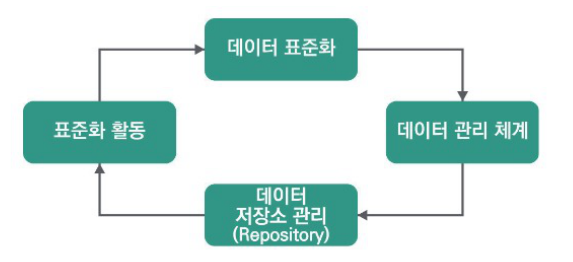
- 데이터 표준화
- 데이터 표준 용어 설정
표준 단어 사전, 표준 도메인 사전, 표준 코드 등으로 구성되며, 각 사전 간 상호 검증이 가능한 점검 프로세스를 포함한다. - 명명 규칙 수립
필요시 언어별로 작성되어 기준 언어와의 연결 상태(mapping)를 유지한다. - 메타 데이터 및 데이터 사전 구축
데이터의 원활한 활용을 위한 데이터 구조 체계를 마련하며, 메타 엔티티 관계 다이어그램 등을 제공한다.
- 데이터 표준 용어 설정
- 데이터 관리 체계
- 표준 데이터를 포함한 메타 데이터와 데이터 사전의 관리 원칙 수립 및 이에 근거한 항목별 상세 프로세스를 수립한다.
- 데이터 관리와 운영을 위한 담당자 및 조직별 역할과 책임을 구체적으로 마련한다.
- 빅데이터의 경우 데이터 생명 주기 관리방안도 수립하여야 한다.
- 데이터 저장소 관리
- 메타 데이터 및 표준 데이터를 관리하기 위한 전사 차원의 저장소를 구성한다.
- 저장소는 데이터 관리 체계 지원을 위한 Workflow 및 관리용 Application을 지원하여야 한다.
- 관리 대상 시스템과의 인터페이스를 통한 통제가 가능해야 한다.
- 데이터 구조 변경에 따른 사전 영향 평가 등을 수행하여야 한다.
- 표준화 활동
- 데이터 거버넌스 체계를 구축한 후 표준 준수 여부를 주기적으로 점검한다.
- 데이터 거버넌스의 조직 내 안정적인 정착을 위한 계속적인 변화관리 및 주기적인 교육을 진행하여야 한다.
- 지속적인 데이터 표준화 개선 활동을 통해 실용성을 증대할 수 있다.
6) 데이터 분석 교육 및 마인드 육성 체계
① 데이터 분석 교육 및 마인드 육성을 위한 변화 관리 필요성
- 데이터 분석의 가치를 극대화하고 내재화하여 안정적인 추진기로 접어들기 위해 필요하다.
- 새로운 체계를 도입하고자 할 경우 저항이나 기존 형태로 돌아가고자 하는 관성이 발생한다.
② 데이터 분석 문화 도입방안
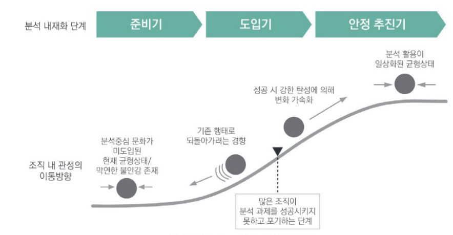
- 적극적 도입 방안
- 적합한 데이터 분석 과제를 도출한다.
- 효율적인 데이터 분석 업무 수행을 위한 데이터 분석 조직을 마련한다.
- 데이터 분석 마인드 형성을 위해 인력에 대한 지속적인 교육과 훈련을 실시한다.
- 데이터 기반 의사결정을 할 수 있는 기업 문화를 정착시키기 위한 변화관리를 지속적으로 계획하고 수행한다.
- 데이터 분석 교육 방향
- 단순한 도구 사용법 교육이 아닌 데이터 분석 역량을 확보하고 강화하는 방향으로 진행한다.
- 데이터 분석 기획자에 대한 데이터 분석 큐레이션 교육을 진행한다.
- 데이터 분석 실무자에 대한 데이터 분석 기법 및 도구 사용에 대한 교육을 진행한다.
- 기존 업무 수행자를 대상으로 데이터 분석 기회 발굴과 시나리오 작성법 등을 교육한다.
- 조직 내 데이터 분석 기반 업무 수행 문화가 정착되도록 분석적인 사고 향상 교육을 실시한다.
- 데이터를 바라보는 관점이나 데이터 분석과 활용 등이 하나의 문화로 받아들여지도록 유도한다.
- 데이터 분석 방법 및 분석적 사고 교육
![데이터 분석 방법 및 분석적 사고 교육 — 중앙: 프로젝트의 주도적 참여, 상시적 분석 역량/문화 강화. 상단: 비즈니스 분석 기회 발굴 및 구체화 과정에 대한 교육을 통해 비즈니스 현업 주도의 프로젝트 수행에 의한 가장 실용적인 분석 도출. 좌측 항목: 분석기회 발굴 및 구체화 방법, 분석 시나리오 작성 방법, 전사 목표 최적화를 위한 분석의 균형 고려 방법, 분석 기법 정의 방법, 분석기회 적용에 대한 ROI 평가 방법. 우측 항목: 분석 데이터 수집 및 가공 방법, 데이터 Mash-Up을 통한 분석정확도 및 품질강화 방법, 분석 아키텍처 설계 고려사항, 비주얼 분석을 통한 패턴 분석하기, 프로세스에 분석 내재화하기. 좌측 박스: 창의적 사고 및 문제해결을 위한 체계적 접근법 숙지, 데이터 분석기회발굴 및 과제 정의 방법 이해, 다양한 빅데이터 분석 기법의 활용, 빅데이터 개념 및 관련 기술의 습득. 하단: 분석 Tool에 대한 교육이 아닌, 분석적 사고, 분석방법, 분석을 통한 업무실행 방식에 대한 교육을 통해 본원적 분석역량 강화 및 분석문화 확산](figs/fig_1-119_01.png)
- 데이터 분석 인프라
- 데이터 거버넌스
- 데이터 사전
- 데이터 분석 교육
- 데이터 분석 거버넌스의 구성요소는 데이터 분석 기획과 관리를 수행하는 조직(Organization), 데이터 분석 과제 기획과 운영 프로세스(Process), 데이터 분석 지원 인프라(System), 데이터 거버넌스(Data), 데이터 분석 교육 및 마인드 육성 체계(Human Resource)이다.
- 데이터 처리 프레임워크
- 분석 애플리케이션
- 분석 엔진
- 분석 라이브러리
- 협의의 분석 플랫폼은 데이터 처리 프레임워크, 분석 엔진, 분석 라이브러리로 구성되어 있다.
- 광의의 분석 플랫폼은 협의의 분석 플랫폼을 포함하여 분석 서비스 제공 엔진, 분석 애플리케이션, 분석 서비스 제공 API, 운영체제로 구성되어 있다.
- 마스터 데이터
- 메타 데이터
- 데이터 저장소
- 데이터 사전
- 데이터 거버넌스의 주요 관리 대상은 마스터 데이터, 메타 데이터, 데이터 사전이다.
08 데이터 분석 수준진단
1) 데이터 분석 수준진단 개요
① 분석 수준진단 필요성
- 조직 경쟁력 강화를 위한 데이터 분석의 도입 여부와 활용을 위해 현 상태에 대한 명확한 점검이 필요하다.
- 데이터 분석의 수준진단을 통해 데이터 분석 기반을 만들기 위해 무엇을 준비하고 더 보완해야 하는지 확인 가능하고, 데이터 분석의 유형이나 방향을 결정할 수 있다.
② 분석 수준진단 목표
- 각 조직이 현재 수행하고 있는 데이터 분석 수준을 명확히 이해하고, 수준진단 결과를 바탕으로 미래 목표수준을 정의한다.
- 데이터 분석을 위한 기반이나 환경이 타사 대비 어느 정도 수준이고, 어느 영역에 선택과 집중을 해야 하는지, 무엇을 보완해야 하는지 등 개선 방안을 도출한다.
③ 분석 수준진단 프레임워크
- 6개 영역의 분석 준비도와 3개 영역의 분석 성숙도를 동시에 평가할 수 있다.
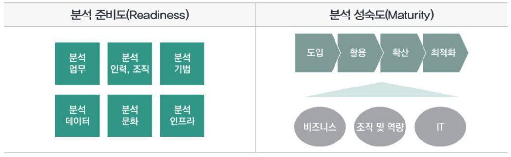
2) 분석 준비도(Readiness)
조직 내 데이터 분석 업무 도입을 목적으로 현재 수준을 파악하기 위한 진단방법이다.
① 분석 준비도의 원리
- 총 6가지 영역을 대상으로 현재 수준을 파악한다.
- 각 진단 영역별로 세부 항목에 대한 수준까지 파악한다.
- 각 진단 결과 전체 요건 중 일정 수준 이상 충족하면 데이터 분석 업무를 도입한다.
- 만일 일정 수준 이상 충족되지 못하면 데이터 분석 환경을 먼저 조성한다.
② 데이터 분석 준비도 프레임워크
| 분석 업무 파악 | 인력 및 조직 | 분석 기법 |
|
|
|
| 분석 데이터 | 분석 문화 | IT 인프라 |
|
|
|
3) 분석 성숙도 모델
① 분석 성숙도 모델의 정의
- 데이터 분석 능력 및 데이터 분석 결과 활용에 대한 조직의 성숙도 수준을 평가하여 현재 상태를 점검하는 방법이다.
② 분석 성숙도 모델의 특징
- 비즈니스 부문, 조직 및 역량 부문, IT 부문 총 3개 부문을 대상으로 실시한다.
- 성숙도 수준에 따라 도입, 활용, 확산, 최적화 단계로 구분한다.
③ 분석 성숙도 모델의 상세화
| 단계 | 도입 단계 | 활용 단계 | 확산 단계 | 최적화 단계 |
| 설명 | 분석을 시작하여 환경과 시스템을 구축 | 분석 결과를 실제 업무에 적용 | 전사 차원에서 분석을 관리하고 공유 | 분석을 진화시켜서 혁신 및 성과 향상에 기여 |
| 비즈니스 부문 |
|
|
|
|
| 조직 · 역량부문 |
|
|
|
|
| IT 부문 |
|
|
|
|
4) 분석 수준진단 결과
① 분석 준비도 및 성숙도 진단 결과
- 조직의 현재 데이터 분석 수준을 객관적으로 파악할 수 있다.
- 타사의 데이터 분석 수준과 비교하여 데이터 분석 경쟁력 확보 및 강화를 위한 목표 수준 설정이 가능하다.
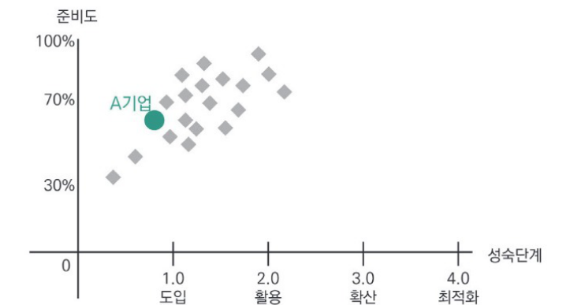
② 사분면 분석(Analytics Quadrant)
- 데이터 분석 관점에서 4가지 유형으로 데이터 분석 수준진단 결과를 구분한다.
- 향후 고려해야 하는 데이터 분석 수준에 대한 목표나 방향을 정의할 수 있으며, 유형별 특성에 따라 개선방안을 수립할 수 있다.
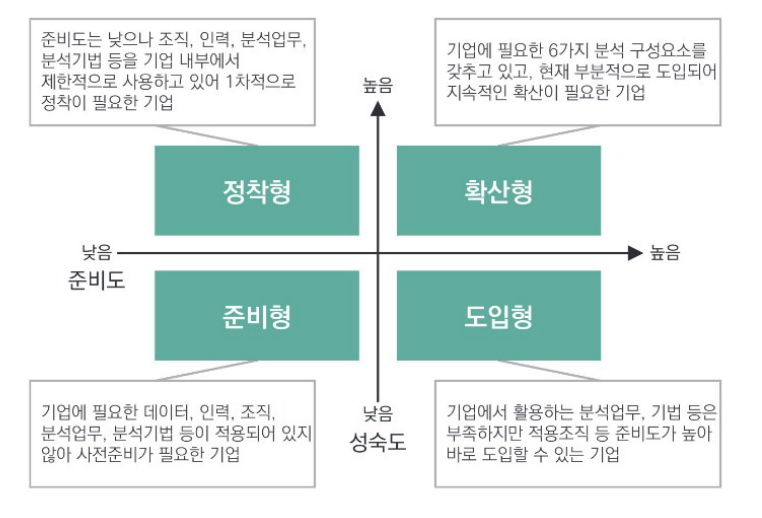
- 비즈니스 부문, 조직 및 역량 부문, IT 부문 총 3개 부문을 대상으로 실시한다.
- 조직 내 데이터 분석 업무 도입을 목적으로 현재 수준을 파악하기 위한 진단방법이다.
- 총 6가지 영역을 대상으로 현재 수준을 파악한다.
- 각 진단 결과 전체 요건 중 일정 수준 이상 충족하면 데이터 분석 업무를 도입한다.
- 분석 성숙도 모델은 비즈니스 부문, 조직 및 역량 부문, IT 부문 총 3개 부문을 대상으로 실시하며, 성숙도 수준에 따라 도입 단계, 활용 단계, 확산 단계, 최적화 단계로 구분한다.
- 최적화 단계에서는 데이터 사이언스 그룹, 경영진 분석 활용, 전략 연계를 비즈니스 부문에서 수행한다.
- 확산 단계에서는 전사 차원에서 분석을 관리하고 공유한다.
- 확산 단계에서는 전사 성과 실시간 분석, 프로세스 혁신 3.0, 분석규칙 관리, 이벤트 관리를 IT 부문에서 수행한다.
- 도입 단계에서는 전문 담당부서에서 수행, 분석기법 도입, 관리자가 분석 수행을 조직 및 역량 부문에서 담당한다.
- 데이터 사이언스 그룹, 경영진 분석 활용, 전략 연계는 조직 및 역량 부문의 최적화 단계에 해당한다.
- 전사 성과 실시간 분석, 프로세스 혁신 3.0, 분석규칙 관리, 이벤트 관리는 비즈니스 부문에서 확산 단계에 해당한다.
- 전문 담당부서에서 수행, 분석기법 도입, 관리자가 분석 수행은 조직 및 역량 부문의 활용 단계에 해당한다.
합격을 다지는 예상문제
- Optimization은 분석 주제와 방법을 모두 알고 있을 때 가능하다.
- Insight는 분석 주제와 방법 모두 모르고 있더라도 가능하다.
- Solution은 분석 주제는 알지만 방법을 알지 못한 경우에도 찾을 수 있다.
- Discovery는 분석 주제와 방법 모두 모르고 있더라도 가능하다.
- 단기적 접근 방식은 당면한 과제를 빠르게 해결하기 위한 목적이다.
- 중장기적 접근 방식은 지속적인 분석 문화를 내재화하기 위한 목적이다.
- 마스터 플랜 접근 방식은 분석의 가치를 증명하기 위해 과제를 빠르게 해결한다.
- 과제 중심적 접근 방식은 명확한 해결을 위해 Quick–Win 방식으로 분석한다.
- 데이터 획득 비용
- 데이터 가공 비용
- 분석 목표 가치(KPI)
- 분석 수준
- 비즈니스 성과
- 전략적 중요도
- 업무 내재화 수준
- 실행 용이성
- 데이터 크기(Volume)
- 데이터 가치(Value)
- 데이터 형태(Variety)
- 데이터 속도(Velocity)
- 사용 가능한 데이터에 대한 확인이 필요하다.
- 기존에 잘 구현되어 활용되고 있는 적합한 사례가 있는지 탐색해 보아야 한다.
- 분석 수행 시 발생 가능한 위험요소들에 대한 고려가 필요하다.
- 분석 수행 시 반복 작업이 빈번하므로 반복 횟수와 회당 제한시간에 대한 고려가 필요하다.
- 가장 우선적으로 분석 과제 적용이 필요한 영역은 3사분면이다.
- 우선순위가 낮은 영역은 2사분면이다.
- 적용 우선순위 기준을 시급성에 둘 경우 순서는 3사분면, 4사분면, 1사분면, 2사분면 순이다.
- 적용 우선순위 기준을 난이도에 둘 경우 순서는 3사분면, 2사분면, 1사분면, 4사분면 순이다.
- 데이터 수집과 데이터 준비 단계를 병렬로 진행한다.
- 반복적인 정련과정을 통해 프로젝트의 완성도를 높여 나간다.
- 모델링 단계는 반복적으로 수행하여야 한다.
- 순차형과 반복형을 혼합하여 사용한다.
- 데이터를 기반으로 문제의 재정의 및 해결방안을 탐색한다.
- 신상품 개발이나 전략 수립 등 중요한 의사결정이 필요할 때 사용한다.
- 문제가 먼저 주어지고 이에 대한 해법을 찾아간다.
- 동적인 환경에서 발산과 수렴 단계를 반복적으로 수행하여 상호 보완한다.
- 문제 탐색(Problem Discovery)
- 문제 정의(Problem Definition)
- 문제 분석(Problem Analysis)
- 해결방안 탐색(Solution Search)
- 데이터 분석을 통해 원인을 추적하면서 문제를 도출하거나 재정의할 수 있다.
- 데이터 분석을 통해 생각지 못한 인사이트를 도출할 수 있다.
- 비지도학습 방법에 의해 수행되며 시행착오를 통한 개선이 가능하다.
- 솔루션 도출은 유효하지만 새로운 문제 탐색은 어렵다.
- 매뉴얼과 전문지식
- 상세한 절차
- 도구와 기법
- 템플릿과 산출물
- Preprocessing → Transformation → Data Mining → Interpretation/Evaluation → Selection
- Selection → Preprocessing → Transformation → Data Mining → Interpretation/Evaluation
- Interpretation/Evaluation → Selection → Preprocessing → Transformation → Data Mining
- Preprocessing → Transformation → Data Mining → Selection → Interpretation/Evaluation
- 업무 이해 → 데이터 준비 → 데이터 이해 → 모델링 → 평가 → 전개
- 데이터 이해 → 업무 이해 → 전개 → 데이터 준비 → 모델링 → 평가
- 업무 이해 → 데이터 이해 → 데이터 준비 → 모델링 → 평가 → 전개
- 데이터 준비 → 데이터 이해 → 업무 이해 → 모델링 → 평가 → 전개
- 추출 → 수정 → 탐색 → 모델링 → 평가
- 탐색 → 수정 → 추출 → 모델링 → 평가
- 탐색 → 추출 → 수정 → 모델링 → 평가
- 추출 → 탐색 → 수정 → 모델링 → 평가
- Planning → Preparing → Analyzing → Developing → Deploying
- Planning → Analyzing → Developing → Deploying → Preparing
- Planning → Developing → Deploying → Preparing → Analyzing
- Planning → Deploying → Preparing → Analyzing → Developing
- 필요 데이터 정의
- 분석용 데이터 준비
- 데이터 스토어 설계
- 데이터 수집 및 정합성 점검
- 프로젝트 정의 및 계획 수립
- 비즈니스 이해 및 범위 설정
- 모델 발전계획 수립
- 프로젝트 위험계획 수립
- 단계(Phase)
- 프로세스(Process)
- 스텝(Step)
- 태스크(Task)
합격을 다지는 예상문제 정답 & 해설
Insight는 분석 주제는 정해지지 않았더라도 방법을 알고 있을 때 가능하다.
분석의 가치를 증명하고 이해관계자들의 동의를 얻기 위해 과제를 빠르게 해결하여 그 가치를 조기에 체험시키는 방식은 혼합 방식이다.
난이도를 평가하는 요소로는 데이터 획득 비용, 데이터 가공 비용, 데이터 저장 비용, 분석 적용 비용, 분석 수준이 있으며, 전략적 중요도와 목표 가치는 시급성에 해당한다.
우선순위를 결정하는 주요 요인으로는 전략적 중요도, 비즈니스 성과(ROI), 실행 용이성이 있다.
투자비용 요소로는 데이터 크기, 데이터 형태, 데이터 속도가 있으며, 비즈니스 효과로 데이터 가치가 있다.
분석 수행 시 분석 품질과 비용이라는 서로 상반되는 요소들을 고려하여 분석 작업을 반복할 필요는 있지만 분석 기획 단계에서 미리 반복 횟수를 정하여 제한하는 것은 바람직하지 않다.
적용 우선순위 기준을 난이도에 둘 경우 순서는 3사분면, 1사분면, 4사분면, 2사분면 순이다.
데이터 수집 및 확보와 데이터 준비 단계는 순차적으로 진행하여야 한다.
문제가 먼저 주어지는 것은 하향식 접근 방식이고, 동적인 환경에서 발산과 수렴 단계를 반복하는 것은 혼합 방식이며 신상품 개발이나 전략 수립 등 중요한 의사결정 시 사용한다.
하향식 접근 방식의 4단계 구성요소로는 문제 탐색, 문제 정의, 해결방안 탐색, 타당성 평가가 있으며, 순차적으로 진행된다.
하향식 접근 방식은 솔루션 도출은 유효하지만 새로운 문제 탐색은 어렵다.
분석 방법론의 구성요건은 상세한 절차, 방법, 도구와 기법, 템플릿과 산출물, 그리고 어느 정도의 지식만 있으면 활용 가능한 수준의 난이도이다.
KDD 분석 방법론의 분석절차는 데이터셋 선택(Selection), 데이터 전처리(Preprocessing), 데이터 변환(Transformation), 데이터마이닝(Data Mining), 데이터마이닝 결과 평가(Interpretation/ Evaluation) 순으로 수행된다.
CRISP–DM 분석 방법론의 분석절차는 업무 이해(Business Understanding), 데이터 이해(Data Understanding), 데이터 준비(Data Preparation), 모델링(Modeling), 평가(Evaluation), 전개(Deployment) 순으로 수행된다.
SEMMA 분석 방법론의 분석절차는 추출(Sample), 탐색(Explore), 수정(Modify), 모델링(Modeling), 평가(Assess) 순으로 수행된다.
빅데이터 분석 방법론의 개발절차는 분석 기획(Planning), 데이터 준비(Preparing), 데이터 분석(Analyzing), 시스템 구현(Developing), 평가 및 전개(Deploying) 순으로 수행된다.
데이터 준비 단계의 세부 태스크는 필요 데이터 정의, 데이터 스토어 설계, 데이터 수집 및 정합성 점검이 있으며, 분석용 데이터 준비 태스크는 데이터 분석 단계에 포함된다.
분석 기획 단계의 세부 태스크는 비즈니스 이해 및 범위 설정, 프로젝트 정의 및 계획 수립, 프로젝트 위험계획 수립이 있으며, 모델 발전계획 수립 태스크는 평가 및 전개 단계에 속한다.
계층적 프로세스 모델은 단계(Phase), 태스크(Task), 스텝(Step) 3단계로 구성되어 있다.
SECTION 02 분석 작업 계획
빈출 태그 데이터 분석 영역 · 분석 변수 · 작업 계획 · 분석 프로젝트
01 분석 작업 개요
분석 작업 계획을 수립하기 위해 데이터 처리 프로세스 전체에 대한 이해가 필요하며, 데이터 처리 영역과 데이터 분석 영역으로 나누어 살펴볼 수 있다.
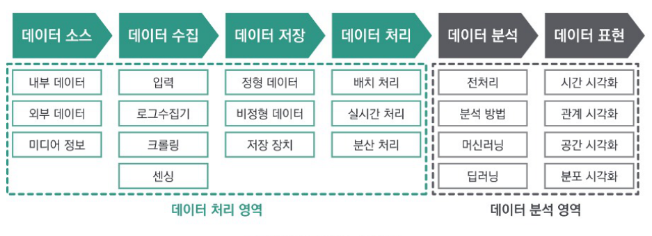
1) 데이터 처리 영역
데이터 분석을 위한 기초 데이터를 정의하고 수집 및 저장, 분석하기 수월하도록 물리적인 환경을 제공하는 영역이다.
| 단계 | 내용 |
| 데이터 소스 | 기업 내 각 부서나 서비스별 적재되고 있는 내부 데이터와 다른 기업이나 공공 데이터 등 외부 데이터가 있다. |
| 데이터 수집 | 사용자로부터 데이터를 직접 입력받거나 로그수집기, 크롤링, 센서네트워크 등을 통해 데이터를 수집한다. |
| 데이터 저장 | 데이터를 유형별로 나눠 최적의 설계를 하여 데이터 스토리지에 저장한다. |
| 데이터 처리 | 저장된 대용량의 데이터를 신속하고 정확하게 처리하기 위하여 실시간 처리 및 분산 처리 등을 시도한다. |
2) 데이터 분석 영역
저장되어 있는 데이터를 추출하여 분석 목적과 방법에 맞게 가공한 후, 데이터 분석을 직접 수행하고 그 결과를 표현하는 영역이다.
① 데이터 분석
- 데이터 분석을 위해 저장된 데이터를 추출 및 가공하여 목적에 맞는 분석 방법을 통해 분석한다.
| 구분 | 내용 |
| 도메인 이슈 도출 |
|
| 분석목표 수립 |
|
| 프로젝트 계획 수립 |
|
| 보유 데이터 자산 확인 |
|
② 데이터 표현
- 분석된 결과를 누구나 쉽게 이해할 수 있도록 적합한 시각화 방법을 이용하여 표현한다.
| 구분 | 내용 |
| 빅데이터 분석 결과 시각화 | 다양한 분석 및 시각화 도구를 활용하여 분석 결과를 시각화 한다. |
- 크게 데이터 처리 영역과 데이터 분석 영역으로 나누어 볼 수 있다.
- 데이터 처리 영역은 데이터 분석을 위한 기초 데이터를 정의하고 수집 및 저장, 분석 환경을 제공한다.
- 데이터 분석 영역은 저장된 데이터를 추출하여 분석 목적과 방법에 맞게 가공하여 분석을 수행한다.
- 데이터 처리 영역은 데이터 수집, 저장, 처리, 표현 단계로 상세화 된다.
- 데이터 처리 영역은 데이터 소스, 수집, 저장, 처리 단계로 상세화 되며, 데이터 분석 영역은 데이터 분석, 표현 단계로 상세화 된다.
02 데이터 확보 계획
1) 데이터 확보를 위한 사전 검토사항
① 필요 데이터의 정의
- 분석 목적에 맞는 데이터를 정의하고, 필요한 데이터를 확보할 수 있는지 확인하여야 하며, 확보할 수 없다면 대안을 함께 고려하여야 한다.
- 기업 내부 및 외부 공공기관이나 협력관계의 타 기업 담당자, 전문가 등 이해관계자들과 확보 가능한 데이터의 목록과 기대효과 등을 작성한다.
② 보유 데이터의 현황파악
- 사전에 정의한 데이터의 존재 여부와 해당 데이터가 최신성을 보장하는지 확인한다.
- 분석 품질을 보장할 만큼 데이터 품질이 우수한지, 충분한 양이 존재하는지 확인한다.
③ 분석 데이터의 유형
- 분석 데이터 확보를 위해 수집 대상 데이터의 유형을 고려해야 한다.
- 어떤 데이터를 어떤 기법을 이용하여 분석할 것인지 수립된 계획에 따라 데이터의 유형을 선택하고 변수를 정의해야 한다.
④ 편향되지 않고 충분한 양의 데이터 규모
- 데이터 분석 기법에 따라 훈련(Training) 데이터셋, 검증(Validation) 데이터셋, 테스트(Test) 데이터셋이 필요할 수 있다.
- 따라서 신뢰성 높은 데이터 분석 모형 개발과 정확한 데이터 분석을 위해 3가지 데이터셋으로 나누어 사용할 만큼 충분한 데이터가 확보되어야 한다.
⑤ 내부 데이터의 사용
- 필요 데이터에 대한 데이터 목록(변수 명칭, 설명, 형태, 기간, 용량, 권한 등)을 작성한다.
- 필요 데이터에 대한 관련 법률이나 보안적인 요소들을 확인하고, 개인정보일 경우 비식별 조치방안을 함께 고려한다.
- 필요 데이터의 관리 권한이 다른 부서에 있는 경우 협의를 통해 데이터 공유 가능 여부를 확인한다.
⑥ 외부 데이터의 수집
- 필요 데이터에 대한 데이터 목록을 데이터를 보유한 기업의 이름과 데이터 제공 방법(Open API, 복제 등)까지 고려하여 작성한다.
- 필요 데이터의 수집이 관련 법률이나 제도상 제약이 없는지 검토한다.
- 필요 데이터에 대하여 보유 기업으로부터 데이터 제공 가능여부와 구매 비용 등을 협의한다.
⑦ 데이터 수집 방법
- 설문조사 : 설문조사는 사람들의 의견이나 행동에 대한 데이터를 수집하는 일반적인 방법으로 온라인 설문지, 전화 인터뷰, 직접 면접 등의 형태로 진행될 수 있으며, 개별 질문이나 척도를 사용하여 응답자의 의견을 수집한다.
- 관찰 : 관찰은 사람들의 행동, 사건 또는 상황을 직접 관찰하여 데이터를 수집하는 방법이다. 관찰은 실시간 또는 사전에 녹화된 비디오 또는 사진 등을 통해 이루어질 수 있으며, 이 방법은 사람들의 실제 행동을 측정하고 분석할 때 유용하다.
- 실험 : 실험은 특정 가설을 검증하기 위해 조작된 조건에서 데이터를 수집한다. 실험은 종종 실험 그룹과 대조 그룹으로 나뉘며, 서로 다른 처리를 받는 조건에서 차이를 비교하여 결과를 분석한다.
- 웹 크롤링 : 웹 크롤링은 웹 페이지를 자동으로 탐색하고 데이터를 추출하는 과정이다. 웹 크롤러는 웹사이트에서 정보를 수집하고, 텍스트, 이미지, 링크 등을 추출하여 분석한다.
- 소셜 미디어 분석 : 소셜 미디어 플랫폼에서 제공되는 데이터를 활용하여 트렌드, 의견, 감성 등을 분석하는 방법이다. 특정 키워드, 해시태그, 사용자 활동 등을 모니터링하여 데이터를 수집하고 분석할 수 있다.
- 데이터베이스 및 기존 데이터 활용 : 공공 데이터베이스, 기업 내부 데이터베이스, 과거 연구 등을 활용하여 데이터를 수집하고 분석할 수 있다.
- FGI★(Focused Group Interview, 집단면접) : FGI는 작은 그룹의 참가자들을 모아 집단적인 토론을 통해 의견과 경험을 수집하는 방법으로 일반적으로 6~12명의 참가자로 구성된 집단이 모여 진행되며, 주제와 관련된 질문들이 제시되어 참가자들은 서로의 의견을 나누고 토론한다. 이러한 토론은 구성원 간의 상호작용과 아이디어 교환을 통해 보다 깊은 인사이트를 얻을 수 있도록 도와준다.
- 스크래퍼(Scraper) : 스크래퍼는 웹 스크래핑(Web Scraping)을 수행하는 프로그램이나 도구이다. 웹 스크래핑은 웹 페이지의 내용을 자동으로 추출하여 데이터를 수집하는 과정이며, 스크래퍼는 웹사이트의 HTML 구조를 분석하고 필요한 정보를 추출하는 기능을 가진다.
2) 분석에 필요한 변수 정의
데이터 분석 요건에 따라 도출된 활용 시나리오에 적합한 데이터의 유형 및 분석 변수를 정의한다.
① 데이터 수집 기획
- 데이터 수집 기법을 활용하여 필요 데이터를 배치 자동화로 수집한다.
- 데이터 수집 타깃 시스템 또는 사이트를 선별한다.
- 수집 대상 화면, 텍스트를 위해 인덱스 생성을 기획한다.
- 대상 시스템별 데이터 수집을 위한 크롤러를 준비하고 저장소를 기획한다.
- 크롤링 주기, 대상 범위를 확정하고 데이터 수집을 기획한다.
- 데이터 거래소, 공공 데이터에 적재된 분야별 데이터를 분류하고 선별한다.
- 공공 데이터 사이트에 접속하여 필요한 도메인의 데이터를 검색한다.
- 검색한 공공 데이터 중 분석 대상이 되는 도메인의 우선순위를 정의한다.
- 필요한 데이터를 다운로드받아 저장할 수 있도록 계획한다.
- 저장한 데이터를 NoSQL 데이터에 적재하고 정제할 수 있도록 설계한다.
- NoSQL에 적재한 데이터를 정제할 수 있도록 기획한다.
② 분석 변수 정의
- 빅데이터의 특징을 고려하여 분석 변수 생성을 기획한다.
- 상관관계 분석을 위한 데이터 연속성 범주 등을 고려하여 분석 변수를 정의한다.
- 분석 변수 유형과 형성 알고리즘을 이용하여 분석 유형을 도출한다.
- 변수의 분포를 구별하는 정도에 따라 순수도(purity) 또는 불순도(impurity)에 의해서 측정 구간별 순수도를 가장 높이는 분석 변수를 도출한다.
3) 분석 변수 생성 프로세스 정의
분석 대상에 대해 객관적으로 인식하고 논리적 인과관계 분석 및 데이터 간 상관관계 분석을 위한 분석 변수 생성 프로세스를 정의한다.
① 객관적 사실(Fact) 기반의 문제 접근
- 명확한 문제 인식을 위하여 분석적이고 가정(Why)에 의한 접근 방법과 함께 무엇(What)이 문제인지를 파악하여 객관적 관찰 데이터 유형을 식별한다.
② 데이터의 상관 분석
- 빅데이터 분석 대상의 연관성 분석을 통해 데이터 집합 간 통계적 관련성을 분석할 수 있는 변수를 생성하고 변수의 척도를 분류한다.
- 변수 간 밀접한 관련성을 갖고 변화하는가를 분석하는 기법인 연관성 개념을 활용하여 변수 척도에 따른 연관성 분석을 수행한다.
- 분석 변수를 기반으로 연관성을 분석하여 데이터 간 숨겨진 관계성을 파악하고, 가치있는 데이터를 도출할 수 있도록 분석 변수를 생성한다.
③ 프로토타입을 통한 분석 변수 접근
- 의미있는 분석 변수를 생성하기 위하여 프로토타이핑 접근법을 통해 결과를 확인하며, 반복적으로 개선하여 필요한 데이터를 식별하고 구체화한다.
- 프로토타이핑 모델로 반복적으로 개선하여 의미있는 데이터와 분석 변수를 생성함으로써 비정형 데이터가 갖는 문제점을 해소한다.
| 필요성 | 내용 |
| 문제 인식 수준의 확인 |
|
| 필요 데이터 존재 여부 |
|
| 사용 목적에 따른 가변성 검증 |
|
4) 생성된 분석 변수의 정제를 위한 점검항목 정의
분석 기획 단계에서 도출된 문제 인식, 해결을 위한 개념적 대안 설계를 통해 도출된 데이터에 대해 가용성을 평가하고 점검항목을 정의한다.
① 분석 변수 점검의 필요성
- 데이터의 가용성과 적정성이 부족할 경우 문제 해결 및 활용 시나리오 적용을 통해 가치 있는 결과를 도출하기 어렵다.
- 실행 전 분석 변수를 논리적 지표에 따라 점검한다.
② 분석 변수 점검항목 정의
- 데이터 분석 도구, 활용 등 다각도로 분석 변수 점검 항목을 정의한다.
- 데이터 수집 시 분석 적합성과 데이터 확보 유무를 고려하여 기획한다.
- 데이터의 중복, 범위, 연관성 등을 도출할 수 있는 방법을 기획한다.
- 데이터 적합성을 고려하여 수행할 수 있는 분석 검증 방법을 기획한다.
- 수집 데이터에 존재할 수 있는 데이터의 특징 변수 도출 방법을 기획한다.
- 수집 데이터 변수 간 결합 가능 여부를 검증할 수 있는 방법을 기획한다.
- 수집 데이터의 타당성 검증 방법을 기획한다.
- 데이터 수집에 투입되는 비용 및 시간을 조사한다.
- 데이터 수집 기법의 기술적 타당성 검증 방법을 기획한다.
| 분류 | 점검 항목 | 내용 |
| 데이터 수집 | 데이터 적정성 | 문제 해결에 적절한 분석 변수인가? |
| 데이터 가용성 | 수집 가능한 데이터인가? | |
| 대체 분석 데이터 유무 | 수집 불가능한 데이터인 경우 간접적으로 연관성 있는 데이터로 대체 가능한가? | |
| 데이터 적합성 | 데이터 중복 | 중복이나 노이즈 제거, 데이터값 존재 유무 등 기초 데이터 클렌징 수행 가능한가? |
| 분석 변수별 범위 | 분석 변수별 측정될 수 있는 min/max를 확인하였는가? | |
| 분석 변수별 연관성 | 수집된 데이터 간 충분 간격으로 연관성이 있는가? | |
| 데이터 내구성 | 데이터 노이즈, 왜곡이 발생하였을 때 예측 성능을 보장할 수 있는가? | |
| 특징 변수 | 특징 변수 사용 | 분석 변수 중 바로 특징 변수로 사용할 수 있는 가능성이 있는가? |
| 변수 간 결합 가능 여부 | 분석 변수를 결합하여 교차 검증(Cross Validation)을 할 수 있는가? | |
| 타당성 | 편익/비용 검증 | 분석 비용과 분석 후 결과가 추가적 매출, 수익 등에 기여할 수 있는가? |
| 기술적 타당성 | 다양한 분석 툴을 활용할 수 있는 분석 변수를 도출하였는가? |
5) 생성된 분석 변수의 전처리 방법 수립
데이터 정제를 위한 점검항목 정의 후 이에 맞게 논리적 모형 설계를 위한 데이터 전처리 방법을 수립한다.
① 데이터 전처리 수행
- 다양한 비즈니스 도메인에서 추출한 정형, 반정형, 비정형 데이터를 분석 및 처리에 적합한 데이터 형태로 조작한다.
- 데이터 정제, 통합, 축소, 변환을 반복적으로 수행하여 분석 변수로 활용하는 방안을 수립할 수 있다.
| 처리 기법 | 내용 |
| 데이터 정제(Cleaning) | 결측값을 채우거나 이상치를 제거하는 과정을 통해 데이터의 신뢰도를 높이는 작업 |
| 데이터 통합(Integration) | 다수의 정제된 데이터를 통합하여 표현하는 작업 |
| 데이터 축소(Reduction) | 데이터 집합의 크기는 더 작지만 분석 결과는 같은 데이터 집합으로 만드는 작업 |
| 데이터 변환(Transformation) | 데이터 마이닝의 효율을 높이기 위한 변환 및 변형 작업 |
② 빅데이터 분석 프로세스 수행
- 다양한 업무와 도메인이 포함되어 있어 완전히 자동화하여 처리하는 것은 어렵다.
- 데이터 전처리 과정은 정제와 통합을 통해 약 60~80% 처리된다.
③ 데이터 전처리 방안 수립
- 데이터 Cleaning, Integration, Transformation, Reduction을 반복적으로 수행하여 분석 변수로 활용하는 방안을 수립할 수 있다.
| 절차 | 세부 활동 | 내용 |
| 정제 (Cleaning) | 모순점 포착 |
|
| 메타데이터 확인 |
| |
| 통합/축소 (Integration) | 데이터 통합 |
|
| 변환 (Transformation) | 데이터 변환 |
|
6) 생성 변수의 검증 방안 수립
① 분석 변수의 데이터 검증 방안 수립
- 모든 개별 데이터에 대한 타당성 보장보다는 빅데이터 개념 및 특성 측면에서 관리되어야 하는 항목과 수준에 대해 품질 검증을 정의한다.
| 구분 | 품질 관리 접근 방법 |
| 대량 데이터 |
|
| 정밀 데이터 |
|
| 데이터 출처 불명확 |
|
- 빅데이터 품질 관리 및 검증은 정확성보다는 데이터의 양이 충분한지에 대한 충분성 개념하에 조직의 비즈니스 영역 및 목적에 따라 검증한다.
| 구분 | 품질 검증 전략 |
| 정확성 (Accuracy) |
|
| 완전성 (Completeness) |
|
| 적시성 (Timeliness) |
|
| 일관성 (Consistency) |
|
② 데이터 검증 체계 수립
- 빅데이터 품질 및 데이터 검증 체계를 수립한다.
- 수집한 데이터의 출처가 명확한지 검증한다.
- 중복된 데이터가 존재하는지, 정보 활용에 컴플라이언스 이슈가 없는지 데이터 관리 대상 선별을 검증한다.
- 데이터의 다양성이 확보되었는지, 데이터셋이 충분한지 검증한다.
- 주요 품질 지표의 조건을 만족하는지, 분석, 검증, 테스트 데이터가 분리되어 있는지 주요 품질 지표를 분석 및 검증한다.
- 분석 변수 데이터 검증 방안을 수립한다.
- 품질 관리를 통해 데이터 중복성, 불일치성 등 생성된 분석 변수에 대한 데이터 검증 방안을 수립한다.
- 분석 목적에 맞는 데이터를 정의하고, 필요한 데이터를 확보할 수 있는지 확인하여야 하며, 확보할 수 없다면 대안을 함께 고려하여야 한다.
- 사전에 정의한 데이터의 존재 여부와 분석 품질을 보장할 만큼 데이터 품질이 우수한지, 충분한 양이 존재하는지 확인한다.
- 분석 대상에 대해 객관적으로 인식하고 논리적 인과관계 분석 및 데이터 간 상관관계 분석을 위한 분석 변수 생성 프로세스를 정의한다.
- 어떤 데이터를 어떤 기법을 이용하여 분석할 것인지 수립된 계획에 따라 데이터의 유형을 선택하고 변수를 정의해야 한다.
- 데이터 확보를 위한 사전 검토사항은 필요 데이터의 정의, 보유 데이터의 현황파악, 분석 데이터의 유형 확인, 편향되지 않고 충분한 양의 데이터 규모 확인, 내부 데이터의 사용 가능여부 확인, 외부 데이터의 수집 가능여부 등을 확인하는 것이다.
- 분석 대상에 대해 객관적으로 인식하고 논리적 인과관계 분석 및 데이터 간 상관관계 분석을 위한 분석 변수 생성 프로세스를 정의하는 것은 데이터 확보를 위한 사전 검토대상은 아니다.
03 분석 절차와 작업 계획
1) 분석 절차
분석 절차는 데이터 분석의 시발점이 되는 문제 인식에서부터 시작하여 데이터를 확보하고 분석하여 결과를 도출 및 제시하는 단계까지의 일반적인 과정을 정형화한 프로세스이다.
① 분석 절차의 특징
- 분석 방법론을 구성하는 최소 요건이다.
- 상황에 따라 단계를 추가할 수도 있으며 생략 가능하다.
| 일반적 데이터 분석 절차 | NCS 데이터 분석 절차 | 단계별 산출물 |
|
|
|
|
|
|
|
|
|
② 일반적인 분석 절차
| 구분 | 내용 |
| 문제 인식 |
|
| 연구조사 |
|
| 모형화 |
|
| 데이터 수집 |
|
| 데이터 분석 |
|
| 분석 결과 제시 |
|
③ 분석 절차 적용 시 고려사항
- 문제에 대한 구체적 정의가 가능하고, 필요 데이터를 보유하고 있으며, 분석역량을 갖추고 있다면 통계 기반의 전통적 데이터 분석을 수행할 수 있다.
- 문제에 대한 구체적 정의가 없다면 데이터 마이닝 기반으로 데이터를 분석하여 인사이트를 발굴하거나 일단 데이터 분석을 시도한 후 결과를 확인해 가면서 반복적으로 개선 결과를 도출해 볼 수 있다.
2) 작업 계획
분석 작업 계획은 분석 절차에 따라 데이터 분석 업무를 수행하기 위한 전반적인 작업 내용들을 세부적으로 정의하는 과정이다.
① 분석 작업 계획 수립
| 단계 | 내용 |
| 프로젝트 소요비용 배분 |
|
| 프로젝트 작업분할구조 수립 |
|
| 프로젝트 업무 분장 계획 및 배분 |
|
② 작업분할구조(Work Breakdown Structure, WBS) 작성
| 단계 | 내용 |
| 데이터 분석과제 정의 |
|
| 데이터 준비 및 탐색 |
|
| 데이터 분석 모델링 및 검증 |
|
| 산출물 정리 |
|
3) 분석목표정의서
문제의 개선방향에 맞는 현실적인 분석목표를 수립하여 필요한 데이터에 대한 정보나 분석 타당성 검토 및 성과측정 방법 등을 정리한 정의서이다.
① 분석목표정의서 구성요소
- 원천 데이터 조사
| 구분 | 내용 |
| 데이터 정보 |
|
| 데이터 수집 난이도 |
|
- 분석 방안 및 적용 가능성 판단
- 개선 목표와 현시점의 분석 목표 간 차이를 고려하여 분석 목표를 조정하거나 상황에 따라 우선순위를 조정한다.
- 분석 목표에 부합한 데이터 분석 기법이 있더라도 현재 적합한 분석 환경이 구축되지 않았다면 분석 목표를 조정한다.
- 성과평가 기준
| 구분 | 내용 |
| 정성적 평가 |
|
| 정량적 평가 |
|
② 분석목표정의서 작성 방법
- 분석 목적을 설정하고 이를 달성하기 위한 세부 목표를 수립한다.
- 필요한 데이터를 정의하고, 분석 방법과 데이터 수집 및 분석 난이도, 수행 주기, 분석 결과에 대한 검증 기준을 설계한다.
- 도메인 이슈 도출을 통한 개선 방향을 토대로 목표 수준을 정리한다.
- 연구조사 단계에서는 문제 해결을 위한 각종 문헌을 조사하고 내용을 바탕으로 문제에 대한 해결방안을 정의한다.
- 모형화 단계에서는 수집된 데이터로부터 변수들간의 관계를 분석한다.
- 문제 인식 단계에서 분석 주제는 가설 형태 또는 결과 해석을 중심으로 할 수 있다.
- 분석 결과 제시 단계에서는 변수들 간 인과관계나 상관관계를 포함한 분석 결과를 제시하고 공유한다.
- 모형화 단계는 복잡한 문제를 논리적이면서도 단순화하는 과정으로, 문제를 변수들 간의 관계로 정의한다. 수집된 데이터로부터 변수들간의 관계를 분석하는 것은 데이터 분석 단계이다.
04 분석 프로젝트 관리
1) 분석 프로젝트
분석 프로젝트는 과제 형태로 도출된 분석 기회를 프로젝트화하여 그 가치를 증명하기 위한 수단이다.
① 분석 프로젝트의 특징
- 데이터 영역과 비즈니스 영역에 대한 이해와 더불어 지속적인 반복이 요구되는 분석 프로세스의 특성을 이해하여 프로젝트 관리방안을 수립해야 한다.
- 지속적인 개선 및 변경을 염두에 두고 프로젝트 기한 내에 가능한 최선의 결과를 도출할 수 있도록 프로젝트 구성원들과 협업이 필요하다.
② 분석 프로젝트의 추가적 속성
| 관리 영역 | 내용 |
| 데이터 크기 (Data Size) |
|
| 데이터 복잡도 (Data Complexity) |
|
| 속도 (Speed) |
|
| 분석 모형의 복잡도 (Analytic Model Complexity) |
|
| 정확도와 정밀도 (Accuracy & Precision) |
|
| 구분 | 내용 |
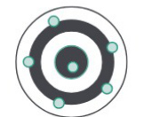 |
|
|
|
|
|
|
③ 분석가의 역할
- 분석가는 데이터 영역과 비즈니스 영역의 중간에서 현황을 이해하고 분석 모형을 통한 조율을 수행하는 조정자의 역할과 분석 프로젝트 관리 역할을 수행한다.
2) 분석 프로젝트 관리
① 효율적인 데이터 분석 수행을 위한 필요성
- 과제 형태로 도출된 분석 기회는 프로젝트화를 통하여 그 가치를 증명하고 목표를 달성할 필요가 있다.
- 범위, 일정, 품질, 이슈 및 리스크, 의사소통 등 영역별로 고려해야 하는 요소가 많아 체계적 관리가 필요하다.
② 분석 프로젝트의 관리 방안
- 분석 프로젝트는 데이터 분석이 갖는 기본 특성(5V)을 살려 프로젝트 관리 지침을 만들어 기본 가이드로 활용해야 한다.
- 프로젝트 관리 영역에 대한 주요한 사항들은 체크포인트 형태로 관리되어야 한다.
- 발생할 수 있는 이슈와 위험을 숙지하고 미연에 방지하는 것이 중요하다.
- 분석 프로젝트를 성공적으로 수행하기 위해 프로젝트의 영역별 관리 포인트를 사전에 이해하고 적용하는 것이 중요하다.
3) 분석 프로젝트의 영역별 주요 관리 항목
① 범위 관리(Scope Management)
- 분석 기획 단계에서 명시한 프로젝트의 범위는 분석을 수행하면서 데이터의 형태와 양 또는 적용되는 모형의 알고리즘에 따라 빈번하게 변경되곤 하며 이것은 프로젝트를 지연시키는 중대한 사유가 된다.
- 분석의 최종 결과물이 분석 보고서 형태인지 시스템인지에 따라 투입되는 자원과 범위가 크게 달라지므로 사전에 충분히 고려되어야 한다.
② 일정 관리(Time Management)
- 분석 프로젝트는 초기에 의도했던 모형이나 결과가 쉽게 나오는 경우가 흔치 않으며, 지속적으로 반복하는 과정에서 많은 시간이 소모되곤 한다.
- 분석 결과의 품질을 보장한다는 전제하에 Time Boxing 기법으로 일정을 관리하는 것이 필요하다.
③ 원가 관리(Cost Management)
- 외부 데이터를 활용하여 데이터 분석을 수행하는 경우 데이터 구입 및 수집을 위해 많은 비용이 소모될 수 있으므로 사전에 충분한 조사가 필요하다.
- 프로젝트를 수행하는 과정에서 목표한 결과를 달성하기 위해 오픈 소스 도구를 사용하지 않고 고가의 상용 도구를 사용하게 될 경우 비용이 증가한다.
④ 품질 관리(Quality Management)
- 분석 프로젝트의 수행 결과에 대한 품질목표를 사전협의를 통해 수립하고 통제하여야 한다.
- 프로젝트 품질은 품질관리계획과 품질통제 및 품질보증으로 구성되어 있으며, 이를 잘 나누어 수행하여야 한다.
⑤ 통합 관리(Integration Management)
- 프로젝트 관리 프로세스들을 통합적으로 운영될 수 있도록 관리하여야 한다.
⑥ 조달 관리(Procurement Management)
- 상황에 따라 분석 프로젝트 목적에 적합한 범위 내에서 외부에 아웃소싱을 수행할 수 있다.
- PoC(Proof of Concept)와 같이 지속성이 보장되지 않은 프로젝트는 인프라 구매보다 클라우드와 같은 대여방식을 고려해 볼 필요가 있다.
⑦ 인적자원 관리(Human Resource Management)
- 분석 프로젝트는 인적자원과 데이터가 핵심이므로, 프로젝트 수행 전 전문인력 확보와 고용유지 방안을 검토하여야 한다.
- 전문인력의 효율적인 운영을 위해 핵심인재의 전문분야와 보유역량 및 수준 등을 관리하고, 프로젝트별 투입 시점과 피로도 등을 종합적으로 관리한다.
⑧ 위험 관리(Risk Management)
- 필요한 데이터가 확보되지 않거나 품질이 보장되지 않을 경우 분석 프로젝트 진행이 어려울 수 있으며, 관련 위험을 식별하고 대응방안을 수립해야 한다.
- 데이터 및 분석 알고리즘의 한계로 품질목표를 달성하기 어려울 수 있으며, 전문인력의 이탈로 프로젝트가 중단될 수 있어 대응방안 수립이 필요하다.
- 그 밖에 분석 프로젝트 진행 과정에서 발생할 수 있는 위험을 식별하고, 위험을 분석하여 대응방안을 수립해야 한다.
⑨ 의사소통 관리(Communication Management)
- 프로젝트의 원활한 진행을 위한 다양한 의사소통 채널과 모든 이해관계자가 분석 결과를 공유할 수 있도록 시각화와 같은 방안을 마련해야 한다.
⑩ 이해관계자 관리(Stakeholder Management)
- 분석 프로젝트는 데이터 전문가, 분석 전문가, 비즈니스 전문가, 시스템 전문가 등 다양한 전문가의 참여가 필요하며, 이들을 잘 관리하여야 한다.
- 프로젝트 관리자는 분석 프로젝트에 영향을 미치는 이해관계자들을 식별하고 관리하여야 한다.
- 분석 결과를 활용하는 측면에서는 Precision, 분석 모형의 안정성 측면에서는 Accuracy가 중요하다.
- 데이터 크기는 데이터가 지속적으로 생성되어 증가하는 점을 고려한다.
- 분석 모형의 정확도와 복잡도는 Trade off 관계에 있음을 유념해야 한다.
- 정형, 비정형 데이터와 다양한 시스템에 산재되어 있는 원천 데이터들을 통합하는 방안을 수립해야 한다.
- Accuracy는 모형과 실제값 사이의 차이인 정확도를 측정하는 지표이며, Precision은 모형을 계속하여 반복했을 때 결과의 일관성을 측정하는 지표이다. 분석 결과를 활용하는 측면에서는 Accuracy가 중요하고, 분석 모형의 안정성 측면에서는 Precision이 중요하다.
합격을 다지는 예상문제 (SECTION 02)
- Training Dataset
- Verification Dataset
- Validation Dataset
- Test Dataset
- 데이터를 획득하는 데 필요한 비용을 고려하여야 한다.
- 데이터를 제공받기 위한 계약서를 잘 작성하여 모든 법률적 위험요소를 완전히 해소한다.
- 데이터를 수집하여 저장할 방법을 살펴보아야 한다.
- 내부 데이터와의 결합 가능여부 등을 검토하여야 한다.
- 데이터 다양성
- 데이터 가용성
- 데이터 적정성
- 기술적 타당성
- 데이터 정제
- 데이터 통합
- 데이터 변환
- 데이터 삭제
- 편의성
- 정확성
- 완전성
- 적시성
- 연구조사 → 문제 인식 → 데이터 수집 → 모형화 → 데이터 분석 → 분석 결과 제시
- 문제 인식 → 연구조사 → 모형화 → 데이터 수집 → 데이터 분석 → 분석 결과 제시
- 데이터 수집 → 연구조사 → 문제 인식 → 모형화 → 데이터 분석 → 분석 결과 제시
- 연구조사 → 데이터 수집 → 문제 인식 → 모형화 → 데이터 분석 → 분석 결과 제시
- 프로젝트 소요비용 배분
- 프로젝트 작업분할구조 수립
- 프로젝트 정의서 작성
- 프로젝트 업무 분장 계획 및 배분
- 데이터 거버넌스 체계 수립 역량
- 도메인 이슈 도출 역량
- 분석 목표 수립 역량
- 프로젝트 계획 수립 역량
- 데이터 분석과제 정의
- 원천 데이터 조사
- 분석 방안 및 적용 가능성 판단
- 성과평가 기준
- 데이터 크기
- 데이터 분석가의 역량
- 데이터와 분석 모형의 복잡도
- 정확도와 정밀도
- 필요 데이터에 대한 데이터 목록(변수 명칭, 설명, 형태, 기간, 용량, 권한 등)을 작성한다.
- 필요 데이터에 대한 관련 법률적인 요소들을 확인한다.
- 필요 데이터가 내부적 사용 목적일 경우 보안적인 요소들로부터 자유롭다.
- 필요 데이터가 개인정보일 경우 비식별 조치방안을 고려한다.
- 객관적 사실 기반의 문제 접근이 필요하다.
- 데이터의 상관관계 분석이 필요하다.
- 프로토타입을 통한 분석 변수 접근이 필요하다.
- 분석 변수 유형과 형성 알고리즘을 이용한 분석 유형 도출이 필요하다.
- 데이터 중복
- 변수 간 결합 가능 여부
- 분석 변수별 범위
- 분석 변수별 연관성
- 데이터 적정성
- 편익/비용 검증
- 데이터 가용성
- 대체 분석 데이터 유무
- 수집한 데이터의 출처가 명확한지 검증한다.
- 데이터 관리 대상 선별을 검증한다.
- 데이터의 타당성이 확보되었는지 검증한다.
- 주요 품질 지표를 분석 및 검증한다.
- 분석 기법이나 기술의 활용 가능성을 평가한다.
- 신규 데이터나 외부 데이터의 활용 가능성을 평가한다.
- 세분화나 군집화를 통해 집단을 선정한다.
- 분석 특성에 따른 자체 KPI에 의한 성과를 측정한다.
- 세분화나 군집화를 통해 집단을 선정한다.
- 기존 방법 대비 효과의 증감 비율을 평가한다.
- 유효한 가설의 수나 목표 대비 증감 비율을 평가한다.
- 데이터 모형의 정확도를 측정하여 평가한다.
- 정확도는 모형과 실제값 사이의 차이를 측정하는 지표이다.
- 편향(bias)도 높고 분산(variance)도 높은 모델이 정확도와 정밀도가 높다.
- 정밀도는 모형을 계속하여 반복했을 때 결과의 일관성을 측정하는 지표이다.
- 정확도와 정밀도는 Trade off인 경우가 많다.
- 예측값들이 실제값과 멀리 떨어져 있고 예측값끼리도 멀리 떨어져 있다.
- 예측값들은 실제값에 가까이 있으나 예측값끼리는 떨어져 있다.
- 예측값들이 실제값과 멀리 떨어져 있지만 예측값끼리는 모여있다.
- 예측값들과 실제값이 거의 같으며 모여있다.
- 프로젝트 관리 프로세스들을 통합적으로 운영될 수 있도록 관리하여야 한다.
- 분석 프로젝트에 영향을 미치는 이해관계자와 참여하는 데이터, 분석, 비즈니스, 시스템 등의 전문가들을 잘 관리하여야 한다.
- 분석의 최종 결과물이 분석 보고서 형태인지 시스템인지에 따라 투입되는 자원과 범위가 크게 달라지므로 사전에 충분히 고려되어야 한다.
- 상황에 따라 분석 프로젝트 목적에 적합한 범위 내에서 외부에 아웃소싱을 수행할 수 있다.
- 데이터 분석과제 정의 → 데이터 준비와 탐색 → 산출물 정리 → 데이터 분석 모델링 및 검증
- 데이터 준비와 탐색 → 데이터 분석과제 정의 → 산출물 정리 → 데이터 분석 모델링 및 검증
- 데이터 준비와 탐색 → 데이터 분석과제 정의 → 데이터 분석 모델링 및 검증 → 산출물 정리
- 데이터 분석과제 정의 → 데이터 준비와 탐색 → 데이터 분석 모델링 및 검증 → 산출물 정리
합격을 다지는 예상문제 정답 & 해설 (SECTION 02)
신뢰성 높은 데이터 분석 모형 개발과 정확한 데이터 분석을 위해 편향되지 않고 충분한 양의 Training Dataset, Validation Dataset, Test Dataset이 필요하다.
데이터를 제공받기 위한 계약서는 공급자와 요청자 사이의 거래 조건 등을 정리한 것이며, 계약서 작성만으로 법률적 위험요소들이 해소되었다고 볼 수는 없다. 또한 개인정보를 포함한 데이터가 있다면 개인정보 관련 법규를 검토하여 비식별화 조치 등을 취하여야 한다.
데이터 확보 계획 수립 시 데이터 수집을 위해 데이터 적정성과 가용성, 대체 분석 데이터 유무에 대한 확인이 필요하며, 타당성 검증을 위해 편익/비용 검증과 기술적 타당성을 점검한다.
생성 분석 변수의 전처리 방법으로 데이터 정제, 데이터 통합, 데이터 축소, 데이터 변환이 있다.
빅데이터의 주요 품질 지표로는 정확성, 완전성, 적시성, 일관성이 있다.
데이터 분석 절차는 문제 인식, 연구조사, 모형화, 데이터 수집, 데이터 분석, 분석 결과 제시 순으로 수행된다.
분석작업계획 수립 절차로는 프로젝트 소요비용 배분, 프로젝트 작업분할구조 수립, 프로젝트 업무 분장 계획 및 배분이 있다.
NCS 데이터 분석 요구역량으로 도메인 이슈 도출, 분석 목표 수립, 프로젝트 계획 수립, 보유 데이터 자산 확인 능력을 정의하고 있다.
분석목표정의서의 구성요소는 원천 데이터 조사, 분석 방안 및 적용 가능성 판단, 성과평가 기준으로 이루어져 있다.
분석 프로젝트가 갖는 속성으로는 데이터 크기, 데이터 복잡도, 속도, 분석 모형의 복잡도, 정확도와 정밀도가 있다.
필요 데이터에 대한 관련 법률이나 보안적인 요소들을 확인하고, 개인정보일 경우 비식별 조치방안을 고려해야 한다.
분석에 필요한 변수를 정의하는 과정에서 분석 변수 유형과 형성 알고리즘을 이용한 분석 유형 도출이 필요하다.
데이터 적합성 관련 점검항목들은 데이터 중복, 분석 변수별 범위, 분석 변수별 연관성, 데이터 내구성이 있으며, 변수 간 결합 가능 여부는 특징 변수 관련 항목이다.
데이터 수집 관련 점검항목들은 데이터 적정성, 데이터 가용성, 대체 분석 데이터 유무가 있으며, 편익/비용 검증은 타당성 관련 항목이다.
데이터의 타당성이 아닌 다양성이 확보되었는지, 데이터셋이 충분한지 검증한다.
분석 특성에 따른 자체 KPI에 의한 성과를 측정하는 것은 정량적 평가이다.
세분화나 군집화를 통해 집단을 선정하는 것은 정성적 평가이다.
정확도와 정밀도가 높은 모델은 편향과 분산 모두 낮다.
예측값들이 실제값과 멀리 떨어져 있지만 예측값끼리는 모여있으며, 편향은 높고 분산은 낮다.
조달 관리에서는 상황에 따라 분석 프로젝트 목적에 적합한 범위 내에서 외부에 아웃소싱을 수행할 수 있으며, PoC와 같이 지속성이 보장되지 않은 프로젝트는 인프라 구매보다 클라우드와 같은 대여방식을 고려해 볼 필요가 있다.
작업분할구조도 작성절차는 데이터 분석과제 정의, 데이터 준비와 탐색, 데이터 분석 모델링 및 검증, 산출물 정리 순으로 작성한다.